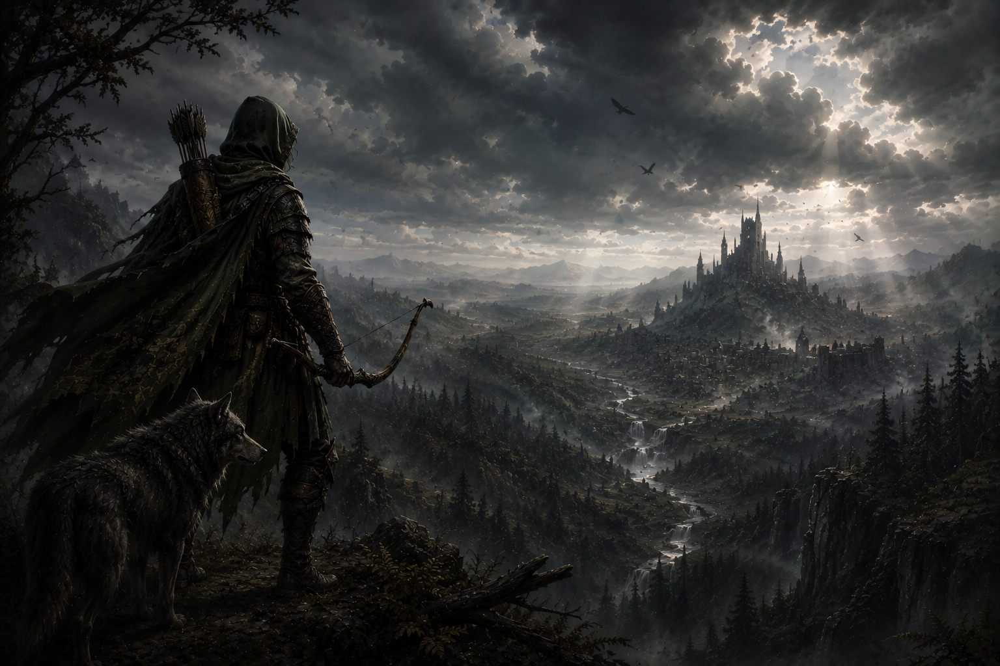

Conteúdo Homebrew e Modificado
Subclasses
Bárbaro
Bardo
Clérigo
Druída
Feiticeiro
Guerreiro
Ladino
Modificações
Magias de Origem Feiticeira - Lista Expandida
Aqui estão as listas de magias expandidas para as subclasses que originalmente não as possuíam. Ao atingir certos níveis na classe você aprende algumas magias específicas da sua subclasse.
Alma Favorecida
| Nível de Feiticeiro | Magias |
|---|---|
| 1º | Santuário |
| 3º | Restauração Menor |
| 5º | Remover Maldição |
| 7º | Guardião da Fé |
| 9º | Restauração Maior |
Linhagem Dracônica
| Nível de Feiticeiro | Magias |
|---|---|
| 1º | Orbe Cromática |
| 3º | Sopro do Dragão |
| 5º | Proteção Contra Energia |
| 7º | Destruição Elemental |
| 9º | Invocar Elemental |
Magia das Sombras
| Nível de Feiticeiro | Magias |
|---|---|
| 1º | Braços de Hadar |
| 3º | Passos sem Pegadas |
| 5º | Invocar Prole Sombria |
| 7º | Sombra de Transtorno |
| 9º | Enervação |
Magia Selvagem
| Nível de Feiticeiro | Magias |
|---|---|
| 1º | Raio do Caos |
| 3º | Coroa da Loucura |
| 5º | Piscar |
| 7º | Confusão |
| 9º | Passo Distante |
Feiticeiro da Tempestade
| Nível de Feiticeiro | Magias |
|---|---|
| 1º | Onda Trovejante |
| 3º | Lufada de Vento |
| 5º | Convocar Relâmpagos |
| 7º | Esfera da Tempestade |
| 9º | Controlar os Ventos |
Modificação Monge
Evolução do Dado de Monge
| Dado | Nível |
|---|---|
| 1d4 | 1–2 |
| 1d6 | 3–6 |
| 1d8 | 7–12 |
| 1d10 | 13–16 |
| 1d12 | 17–20 |
Reserva de Ki Aprimorada
Você ganha pontos de Ki adicionais sempre que atinge um marco de sua subclasse (níveis 3, 6, 11 e 17) e um ponto final no nível 20.
Ataque Desarmado
Golpes desarmados executados por um monge, e armas de monge que possuem a característica de poderem ser utilizados usando tanto Força como Destreza, assim funcionando igual uma arma com a propriedade Acuidade, serão considerados válidos para utilização de habilidades que possuem essa exigência, como no caso do Ataque Furtivo.
Modificação Humano (Base)
A raça Humano (Base) recebeu novas características para torná-la mais interessante.
- Aprendiz Versátil: Você ganha proficiência em todas as Armas Simples ou Armaduras Leves (escolha). Além disso, você adquire proficiência em uma ferramenta, um veículo (terrestre ou aquático) ou um instrumento musical de sua escolha.
- Comunicável: Você sabe falar, ler e escrever em Comum e outros dois idiomas de sua escolha (substitui a habilidade Linguagens padrão).
- Aprendizado Rápido: Ao tentar aprender uma nova Ferramenta, Veículo, Instrumento musical ou Idioma, o tempo gasto é reduzido em 5 dias do total (o custo não muda).
Equipamentos Homebrew
Armas Homebrew
| Arma | Preço | Peso | Dano | Propriedade |
|---|---|---|---|---|
| Simples Corpo-a-Corpo | ||||
| Lança Curta | 2 po | 3 lb | 1d6 Perfurante | Leve, Arremesso (20/60) |
| Sai (Manjisai) | 2 po | 1 lb | 1d4 Perfurante | Acuidade, Leve, Arremesso (20/60), Especial |
| Arma marcial Corpo-a-Corpo | ||||
| Espada Bastarda | 65Po | 8 lb | 1d8/1d10 Cortante | Versátil |
| Espada Claymore | 105Po | 7 lb | 1d12 Cortante | Pesado, Duas Mãos |
| Espada Larga | 70Po | 8 lb | 2d4/1d10 Cortante | Versátil |
| Espada Flamberge | 80Po | 3 lb | 1d10 Cortante | Acuidade, Elegante |
| Katana | 60Po | 3 lb | 1d8/1d10 Cortante | Acuidade, Versátil |
| Kusarigama | 10 po | 2 lb. | 1d6 Perfurante/Contudente | Acuidade, Alcance (10 pés) |
| Machado de Guerra Anão | 70Po | 10 lb | 2d6 Cortante | Pesado, Duas Mãos |
| Marreta Gnômica | 60Po | 7 lb | 1d12 Concursão | Pesado, Duas Mãos |
| Nunchaku | 1 po | 2 lb | 1d6 Contundente | Acuidade |
| Picareta de Guerra Pesada | 60Po | 10 lb | 2d6 Perfurante | Pesado, Duas Mãos |
| Sabre | 45Po | 2 lb | 1d8 Cortante | Acuidade |
| Sanjiegun | 5 po | 4 lb | 1d8 Contundente | Acuidade, Duas mãos |
| Zweihänder | 75 po | 7 lb | 1d12 Cortante | Pesado, Duas Mãos, Alcance (10 pés) |
| Armas Marciais a Distância | ||||
| Shuriken | 5Pc | 0,25lb | 1d4 Cortante | Acuidade, Leve, Arremesso (20/60) |
| Flechas e Virotes Especiais | ||||
| Comum | 100 po | 1 lb | ------- | Especial |
| Incomum Menor | 220 po | 1 lb | ------- | Especial |
| Incomum Maior | 400 po | 1 lb | ------- | Especial |
Propriedades Especiais
- Sai (Manjisai): Esta arma é desenhada para prender a lâmina do oponente. Você tem vantagem em testes de Atletismo ou Acrobacia realizados para desarmar um oponente enquanto empunha um Sai.
- Shuriken: É considerada munição para efeitos de aplicação de veneno.
- Flechas/Virotes Especiais: Todas as flechas especiais vem em pacotes de 10.
Elegante
Você deve ter no mínimo 16 de Destreza para ter a habilidade de empunhar/lutar com uma arma elegante.
Armas de Fogo
| Nome | Custo | Dano | Peso | Propriedades |
|---|---|---|---|---|
| Armas Marciais à Distância | ||||
| Mosquete | 500 po | 1d12 perfurante | 2 lb. | Munição (40/120 pés), recarga, duas mãos |
| Pistola | 250 po | 1d10 perfurante | 3 lb. | Munição (30/90 pés), recarga |
| Munições | ||||
| Balas (10) | 3 po | - | 2 lb. | — |
Catálogo de Flechas Especiais
Estas flechas possuem mecanismos engenhosos e misturas químicas, mas não são consideradas mágicas para fins de superar resistências a dano não-mágico. Cada pacote contém 10 unidades. Após o disparo (independente de acerto ou erro), as propriedades especiais são consumidas e a flecha se torna uma munição comum.
🟢 Flechas Comuns — Valor: 100po
- Flechas Táticas: Perfurante, Farpada, Fragmentação, Impacto e Tendão.
- Flechas Elementais: Fogo, Gelo, Ácido e Relâmpago.
🔵 Flechas Incomuns (Menor) — Valor: 220po
- Flechas Elementais: Radiante, Necrótico e Trovejante.
- Flechas Assassinas: Plantas, Gosmas (Oozes), Mortos-Vivos e Monstruosidades.
🟣 Flechas Incomuns (Maior) — Valor: 400po
- Flechas Assassinas: Celestiais, Ínferos, Humanoides e Aberrações.
Descrições das Flechas
Flechas Táticas
- Flecha Perfurante: Ao atingir uma criatura, a ponta atravessa o corpo do alvo original. Uma segunda criatura em linha direta até 10 pés atrás do primeiro alvo deve fazer um teste de resistência de Destreza CD 8 + Dex + Bônus de Proficiência ou sofrerá metade do dano total do ataque.
- Flecha Farpada: Possui ganchos desenhados para rasgar a carne. Em um acerto, causa 1d4 de dano cortante adicional.
- Flecha de Fragmentação: No impacto, a ponta explode em estilhaços. Até 2 criaturas a até 5 pés do alvo inicial sofrerão 1d4 de dano perfurante.
- Flecha de Impacto: A ponta desta flecha é larga e pesada, desenhada para transferir toda a energia do disparo no alvo. Ao atingir uma criatura de tamanho Médio ou menor, o alvo é empurrado 5 pés para trás em linha reta.
- Flecha de Tendão: Esta flecha possui pequenas lâminas serrilhadas que se prendem às articulações do alvo. Em um acerto, além do dano normal, o movimento da criatura é reduzido em 10 pés até o final do próximo turno dela.
Flechas Elementais
- Adicionam 1d4 de dano extra do tipo elemental específico da flecha ao dano total do ataque.
Flechas Assassinas
- Causa 1d6 de dano extra contra o tipo de criatura específico.
Todas as flechas descritas acima possuem sua versão em Virote de Besta.

Caçador de Sangue
Introdução
Os Caçadores de Sangue são guerreiros vigilantes que dominam a secreta e esotérica magia de sangue para erradicar males antigos e novos. Para invocar poderosas maldições e aprimorar seus ataques contra terrores imunes à magia convencional, eles sacrificam deliberadamente sua própria vitalidade. Ao trilhar essa jornada solitária, esses guerreiros doam partes de si mesmos e vivem sob um rigoroso código de disciplina para não cederem à escuridão. Vagando distantes dos olhos da sociedade, eles buscam constantemente por novas ameaças sombrias e por aliados de mentalidade semelhante nos reinos.
Construção rápida do Caçador de Sangue
Você pode se tornar um Caçador de Sangue rapidamente seguindo estas sugestões. Primeiro, faça da Força ou da Destreza sua maior pontuação de habilidade, dependendo se deseja se concentrar em armas corpo-a-corpo ou armas a distância (ou armas de acuidade). Escolha Inteligência como a próxima pontuação mais alta se quiser se concentrar na potência das maldições de sangue e no poder místico. Em seguida, escolha uma Constituição mais alta, pois você quer ter pontos de vida extras para queimar em seu rito carmesim ou amplificar suas maldições de sangue. Em seguida, selecione o antecedente de orfão ou soldado.
Características de Classe
Como um Caçador de Sangue, você adquire as seguintes características de classe.
Pontos de Vida
- Dado de Vida: 1d10 por nivel de caçador
- Pontos de vida no 1º nivel: 10 + modificador de constituição
- Pontos de vida em niveis seguintes: 1d10 (or 6) + modificador de constituição por nivel de caçador de sangue depois do 1 nivel.
Proficiências
- Armadura: Armaduras leves, médias e escudos.
- Armas: Armas simples e marciais.
- Ferramentas: Suprimentos de Alquimia.
- Testes de Resistencia: Destreza e Inteligência
- Pericias: Escolha 3 dentre Atletismo, Acrobacia, Arcana, História, Percepção, Investigação, Religião e Sobrevivência.
Equipamento
Você começa com o seguinte equipamento, além do equipamento concedido pelo seu antecedente:
- (a) Uma arma marcial ou (b) duas armas simples
- (a) Uma besta leve e 20 flechas
- (a) Uma armadura de couro batido ou (b) armadura de escamas (brunéa)
- Um pacote de explorador e suprimentos de alquimia
| Nível | Bônus de Prof. | Características | Dado de Hemourgia | Maldição de Sangue |
|---|---|---|---|---|
| 1 | +2 | Ruína do Caçador, Maldição de Sangue | 1d4 | 1 |
| 2 | +2 | Estilo de Luta, Rito Carmesim | 1d4 | 1 |
| 3 | +2 | Ordem do Caçador do Sangue | 1d4 | 1 |
| 4 | +2 | Melhoria no Valor de Habilidade | 1d4 | 1 |
| 5 | +3 | Ataque Extra | 1d6 | 1 |
| 6 | +3 | Marca do Castigo, Aprimoramento da Maldição de Sangue | 1d6 | 2 |
| 7 | +3 | Característica de Ordem do Caçador de Sangue, Otimização do Rito Carmesim | 1d6 | 2 |
| 8 | +3 | Melhoria no Valor de Habilidade | 1d6 | 2 |
| 9 | +4 | Psicometria Sinistra | 1d6 | 2 |
| 10 | +4 | Ampliação Sombria | 1d6 | 3 |
| 11 | +4 | Característica de Ordem do Caçador de Sangue | 1d8 | 3 |
| 12 | +4 | Melhoria no Valor de Habilidade | 1d8 | 3 |
| 13 | +5 | Marca da Amarração, Aprimoramento da Maldição de Sangue | 1d8 | 3 |
| 14 | +5 | Alma Fortificada, Otimização do Rito Carmesim | 1d8 | 4 |
| 15 | +5 | Característica de Ordem do Caçador de Sangue | 1d8 | 4 |
| 16 | +5 | Melhoria no Valor de Habilidade | 1d8 | 4 |
| 17 | +6 | Aprimoramento da Maldição de Sangue | 1d10 | 4 |
| 18 | +6 | Característica de Ordem do Caçador de Sangue | 1d10 | 5 |
| 19 | +6 | Melhoria no Valor de Habilidade | 1d10 | 5 |
| 20 | +6 | Maestria Sanguínea | 1d10 | 5 |
Ruína do Caçador
No 1º nível, você sobreviveu ao Ruína do Caçador (Hunter's Bane) - um ritual perigoso e há muito tempo guardado que altera o sangue de sua vida, ligando-o para sempre à escuridão e aprimorando seus sentidos contra ela. Você tem vantagem em teste de Sabedoria (Sobrevivência) para rastrear seres feéricos, demônios ou mortos-vivos, bem como em testes de Inteligência para recuperar informações sobre essas criaturas. O Ruína do Caçador também capacita seu corpo a controlar e moldar a magia de Hemourgia, usando seu próprio sangue e essência vital para alimentar suas habilidades. Algumas de suas características exigem que o alvo faça uma salvaguarda para resistir aos efeitos dessa característica. A DC da salvaguarda é calculada da seguinte forma: DC da salvaguarda de Hemourgia = 8 + seu bônus de proficiência + seu modificador de Sabedoria ou Inteligência (escolha ao pegar o 1º nível nesta classe).
Maldição de Sangue
Também no 1º nível, você ganha a habilidade de canalizar — ou às vezes sacrificar — uma parte de sua essência vital para amaldiçoar e manipular criaturas por meio da magia hemourgia. Você conhece uma maldição de sangue de sua escolha, detalhada na seção "Maldições de sangue" no final da descrição da classe. Você aprende uma maldição de sangue adicional de sua escolha no 6º, 10º, 14º e 18º níveis. Cada vez que você aprende uma nova maldição de sangue, também pode escolher uma das maldições de sangue que conhece e substituí-la por outra. Cada vez que usar a característica Maldição de Sangue, você escolhe qual maldição invocar dentre as que conhece. Enquanto estiver invocando uma maldição de sangue, mas antes que ela afete o alvo, você pode escolher amplificar a maldição sofrendo dano necrótico igual a uma rolagem do seu dado de hemourgia. Esse dano não pode ser reduzido de forma alguma. Uma maldição amplificada ganha um efeito adicional, registrado na descrição da maldição. As criaturas que não têm sangue são imunes a maldições de sangue, a menos que você tenha amplificado a maldição. Depois de usar esse recurso, você deve terminar um descanso curto ou longo antes de poder usá-lo novamente. Você pode usar Maldição de Sangue duas vezes entre os descansos a partir do 6º nível, três vezes a partir do 13º nível e quatro vezes a partir do 17º nível.
Estilo de Luta
No 2º nível, você adota um estilo particular de luta como sua especialidade. Escolha uma das seguintes opções. Você não pode escolher a mesma opção de Estilo de Luta mais de uma vez, mesmo que possa escolher novamente.
- Arquearia: Você ganha um bônus de +2 nas rolagens de ataque que fizer com armas de ataque à distância.
- Duelista: Quando você empunhar uma arma de ataque corpo-a-corpo em uma mão e nenhuma outra arma, você ganha +2 de bônus nas jogadas de dano com essa arma.
- Combate com Armas Grandes: Quando você rolar um 1 ou um 2 num dado de dano de um ataque com arma corpo-a-corpo que você esteja empunhando com duas mãos, você pode rolar o(s) dado(s) novamente e usar a nova rolagem, mesmo que resulte em 1 ou 2. A arma deve ter a propriedade duas mãos ou versátil para ganhar esse benefício.
- Combate com duas Armas: Quando você estiver engajado em uma luta com duas armas, você pode adicionar o seu modificador de habilidade na jogada de dano do seu segundo ataque. (Estilos de Luta do Tasha também permitidos).
Rito Carmesim
Também no 2º nível, você aprende a invocar um rito de hemourgia que infunde energia elemental nos golpes de sua arma. Como uma ação bônus, você pode ativar qualquer rito que conheça em uma arma que esteja segurando. O efeito do rito dura até que você termine um descanso curto ou longo. Ao ativar um rito, você recebe dano necrótico igual a uma rolagem do seu dado de hemourgia. Esse dano não pode ser reduzido de forma alguma. Enquanto o rito estiver em vigor, os ataques que você faz com essa arma são considerados mágicos e causam dano extra igual ao seu dado de hemourgia do tipo determinado pelo rito escolhido. Uma arma pode ter apenas um rito ativo por vez. Outras criaturas não podem receber o benefício de seu rito. Você escolhe um rito dentre os ritos carmesim abaixo quando ganha essa característica pela primeira vez. Você aprende um rito carmesim adicional no 7º nível e novamente no 14º nível.
- Rito da Chama: O dano extra causado por seu rito é dano de fogo.
- Rito do Congelamento: O dano extra causado por seu rito é dano de frio.
- Rito da Tempestade: O dano extra causado por seu rito é o dano elétrico.
- Rito dos Mortos: O dano extra causado por seu rito é dano necrótico. (Pré-requisito: 14º nível).
- Rito do Oráculo: O dano extra causado por seu rito é dano psíquico. (Pré-requisito: 14º nível).
- Rito do Rugido: O dano extra causado por seu rito é dano de trovão. (Pré-requisito: 14º nível).
Ordem do Caçador de Sangue
No 3º nível, você se compromete com uma ordem de caçadores de sangue cuja filosofia o guiará por toda a sua vida: a Ordem dos Caça-Fantasmas, a Ordem do Lycans, a Ordem dos Mutantes ou a Ordem da Alma Profana, cada uma delas detalhada no final da descrição da classe. Sua escolha lhe concede outras características no 7º nível e novamente nos 11º, 15º e 18º níveis.
Melhoria no Valor de Habilidade
Quando você atinge o 4º nível e novamente no 8º, 10º, 12º, 16º e 19º nível, você pode aumentar um valor de habilidade, à sua escolha, em 2 ou você pode aumentar dois valores de habilidade, à sua escolha, em 1. Como padrão, você não pode elevar um valor de habilidade acima de 20 com essa característica.
Ataque Extra
A partir do 5º nível, você pode atacar duas vezes, ao invés de uma, sempre que você realizar a ação de Ataque no seu turno.
Marca do Castigo
No 6º nível, quando causar dano a uma criatura com uma arma para a qual tenha um rito carmesim ativo, você pode canalizar a magia de hemourgia para cravar uma marca arcana nessa criatura (nenhuma ação é necessária). Você sempre sabe a direção da criatura marcada, desde que ela esteja no mesmo plano que você. Além disso, toda vez que a criatura marcada causar dano a você ou a uma criatura que você possa ver em um raio de 5 pés, a criatura marcada sofrerá dano psíquico igual ao seu modificador (sab ou int) de Hemourgia (mínimo de 1). Sua marca dura até que você a desfaça ou até que você use essa característica para aplicar uma marca a outra criatura. Sua marca pode ser dissipada com a magia dissipar magia e é tratada como um feitiço com um nível igual à metade do seu nível de Caçador de Sangue (máximo de 9º nível). Depois de usar essa característica, você não poderá usá-la novamente até terminar um descanso curto ou longo.
Aprimoramento da Maldição de Sangue
A partir do 6º nível, você pode usar sua característica Maldição de Sangue duas vezes antes de ter que terminar um descanso curto ou longo para recuperá-los.
Característica da Ordem do Caçador de Sangue
No 7º nível, você ganha uma característica concedida pela sua Ordem dos Caçadores de Sangue.
Otimização do Rito Carmesim
No 7º nível, você aprende um Rito Carmesim adicional.
Psicometria Sinistra
Ao atingir o 9º nível, você adquire um talento sobrenatural para discernir os segredos que envolvem relíquias misteriosas ou locais tocados pelo mal. Sempre que fizer um teste de Inteligência (História) para recordar informações sobre a história sinistra ou trágica de um objeto que esteja tocando ou do local em que se encontra, você tem vantagem no teste. A critério do Mestre, uma rolagem adequadamente alta pode fazer com que seu personagem tenha breves visões do passado relacionadas ao objeto ou local.
Ampliação Sombria
A partir do 10º nível, a magia de hemourgia impregna seu corpo para reforçar permanentemente sua resistência. Sua velocidade aumenta em 5 pés e você tem um bônus nas salvaguardas de Força, Destreza e Constituição igual ao seu modificador (sab ou int) de Hemourgia (mínimo de +1).
Característica da Ordem do Caçador de Sangue
No 11º nível, você ganha uma característica concedida pela sua Ordem dos Caçadores de Sangue.
Marca da Amarração
A partir do 13º nível, o dano psíquico de sua Marca de Castigo aumenta para duas vezes o seu modificador de Hemourgia (mínimo de 2). Além disso, uma criatura com a marca não pode realizar a ação de Disparada e, se tentar se teletransportar ou sair de seu plano atual por qualquer meio, sofrerá 4d6 de dano psíquico e deverá fazer uma salvaguarda de Sabedoria usando a CD da sua Hemourgia. Em caso de falha, a tentativa de se teletransportar ou sair do plano falha.
Aprimoramento da Maldição de Sangue
A partir do 13º nível, você pode usar sua característica Maldição de Sangue três vezes antes de ter que terminar um descanso curto ou longo para recuperá-los.
Alma Fortificada
Ao atingir o 14º nível, você tem vantagem em salvaguardas contra ser encantado e amedrontado.
Otimização do Rito Carmesim
No 14º nível, você aprende um Rito Carmesim adicional.
Característica da Ordem do Caçador de Sangue
No 15º nível, você ganha uma característica concedida pela sua Ordem dos Caçadores de Sangue.
Aprimoramento da Maldição de Sangue
A partir do 17º nível, você pode usar sua característica Maldição de Sangue três vezes antes de ter que terminar um descanso curto ou longo para recuperá-los.
Característica da Ordem do Caçador de Sangue
No 18º nível, você ganha uma característica concedida pela sua Ordem dos Caçadores de Sangue.
Maestria Sanguínea
Ao atingir o 20º nível, seu domínio da magia de sangue atinge o auge, mitigando seu sacrifício e fortalecendo sua experiência. Uma vez por turno, sempre que uma característica de caçador de sangue exigir que você role um dado de hemourgia, você pode rolar novamente o dado e usar qualquer uma das rolagens. Além disso, sempre que obtiver um acerto crítico com uma arma para a qual tenha um rito carmesim ativo, você recupera um uso gasto de sua característica Maldição de Sangue.
Ordem dos Caça-Fantasmas
A Ordem do Caça-Fantasmas é a mais antiga ordem de caçadores de sangue, especializada no combate contra mortos-vivos e necromantes. Seus membros estudam a morte e os poderes profanos que fazem os mortos se erguerem, dedicando suas vidas a caçar e destruir essas ameaças onde quer que apareçam.
Rito da Aurora
Ao ingressar nessa ordem no 3º nível, você aprende o Rito da Aurora como parte de sua característica Rito Carmesim. Quando você ativa o Rito da Aurora, o dano extra causado pelo seu rito é dano radiante. Além disso, enquanto esse rito estiver ativo em sua arma, você recebe os seguintes benefícios:
- Sua arma emite luz brilhante a um alcance de um raio de 20 pés.
- Você tem resistência a dano necrótico.
- Quando você atinge uma criatura morta-viva com uma arma para a qual o Rito da Aurora está ativo, você rola um dado de hemourgia adicional ao determinar o dano extra do rito.
Especialista em Maldições
A partir do 3º nível, você aprende a dominar maldições de sangue. Você ganha um uso adicional de sua característica Maldição de Sangue. Além disso, suas maldições de sangue podem ter como alvo qualquer criatura, quer ela tenha sangue ou não.
Caminhada Etérea
Ao atingir o 7º nível, no início do seu turno, você pode entrar magicamente no véu entre os planos, desde que não esteja incapacitado. Você pode se mover através de outras criaturas e objetos como se elas fossem terrenos difíceis, bem como ver e afetar criaturas e objetos no Plano Etéreo. Você recebe 1d10 de dano de força se terminar seu turno dentro de um objeto ou criatura, terminando seu movimento e parando no espaço desocupado mais próximo.
Essa característica dura por um número de rodadas igual ao seu modificador de Hemourgia (sab ou int) (mínimo de 1 rodada). Se você estiver dentro de um objeto ou criatura quando a Caminhada Etérea terminar, você será imediatamente desviado para o espaço desocupado mais próximo e sofrerá dano de força igual ao dobro do número de pés que se moveu. Depois de usar esse recurso, você deve terminar um descanso curto ou longo antes de poder usá-lo novamente. Você pode usar Caminhada etérea duas vezes entre descansos a partir do 15º nível.
Marca da Fragmentação
A partir do 11º nível, sua Marca de Castigo expõe um fragmento da essência de seu inimigo, deixando-o vulnerável à sua característica Rito Carmesim. Sempre que atingir uma criatura com uma arma para a qual tenha um rito carmesim ativo, você rola um dado de hemourgia adicional ao determinar o dano extra do rito.
Além disso, se uma criatura marcada tiver a característica Movimento Incorpóreo ou uma característica semelhante, ela não poderá se mover através de criaturas ou objetos enquanto estiver marcada.
Maldição de Sangue do Exorcista
No 15º nível, você aprimora sua habilidade de hemourgia para arrancar a corrupção das mentes e dos corpos de seus aliados - e punir os responsáveis por ela. Você ganha a Maldição de Sangue do Exorcista para sua característica de Maldição de Sangue. Isso não é contabilizado em seu número de maldições de sangue conhecidas.
Rito de Reavivamento
Ao atingir o 18º nível, você aprende a proteger sua vida enfraquecida reabsorvendo a energia que alimenta suas armas. Se você tiver um ou mais ritos carmesins ativos e for reduzido a 0 pontos de vida, mas não morrer instantaneamente, poderá optar por encerrar todos os seus ritos carmesins ativos e cair para 1 ponto de vida.
Ordem dos Lycans
A antiga maldição da licantropia é temida por quase todos os povos, sendo transmitida pelo sangue e semeando a força selvagem e a fome de violência. A Ordem dos Lycans é um grupo de caçadores que se submetem à "Domesticação" — uma inflição cerimonial de licantropia modificada. Usando vontade intensa e rituais secretos de magia de sangue, eles aprendem a controlar e liberar suas formas híbridas por curtos períodos, ganhando capacidade física aprimorada e resiliência não natural. Sem cuidado e foco total, no entanto, até mesmo o maior dos caçadores pode se perder temporariamente em sua própria sede de sangue.
Sentidos Aprimorados
Ao escolher essa ordem no 3º nível, você ganha os sentidos aprimorados de um predador natural. Você tem vantagem em testes de Sabedoria (Percepção) que dependem da audição ou do olfato.
Transformação Híbrida
Também no 3º nível, você aprende a controlar a maldição licantrópica modificada. Como uma ação bônus, você se transforma em uma forma híbrida especial por até 1 hora. Você pode falar, usar equipamentos e usar armaduras enquanto estiver nessa forma e pode voltar à sua forma normal como uma ação bônus. Você volta automaticamente à sua forma normal se ficar inconsciente ou morrer.
Nota: Esse recurso não é considerado a licantropia do Manual dos Monstros. Depois de usar essa característica, você deve terminar um descanso curto ou longo antes de poder usá-la novamente. Enquanto estiver transformado, você ganha as seguintes características:
Poder Feral
Você tem vantagem nos testes de Força e nas salvaguardas de Força e tem um bônus de +1 nas rolagens de dano corpo a corpo. Esse bônus aumenta para +2 no 11º nível e para +3 no 18º nível.
O ônus da licantropia
A Ordem dos Licans é formada por indivíduos que escolhem este caminho com convicção, cientes dos desafios e do peso que ele impõe. Os caçadores de sangue Licans aceitam os dons da licantropia modificada e mantêm o controle por meio de treinamento intenso e magia de sangue. Membros da ordem não podem espalhar a maldição através do sangue, e a infecção de outra criatura só ocorre sob comando da ordem. Aqueles que são purificados contra a vontade retornam para uma nova iniciação. A licantropia modificada se apresenta em formas ligadas a feras específicas, como lobo, urso, tigre, javali e rato, definindo os traços físicos da transformação híbrida, embora os benefícios sejam uniformes.
Pele Resistente
Você tem resistência a dano concussivo, perfurante e cortante de ataques feitos por armas não mágicas e que não sejam revestidas por prata. Além disso, enquanto não estiver usando armadura pesada, você tem um bônus de +1 na CA.
Ataques Predatórios
Você pode aplicar sua característica Rito Carmesim aos seus golpes desarmados. Você pode usar Destreza em vez de Força para as rolagens de ataque e dano de seus golpes desarmados, que causam 1d6 de dano de concussão ou cortante. Esse dano aumenta para 1d8 no 11º nível. Além disso, ao usar a ação de ataque para fazer um golpe desarmado, você pode fazer um golpe desarmado adicional usando sua ação bônus.
Sede de Sangue
Se começar o seu turno com menos pontos de vida do que a metade do seu máximo, você deve ser bem-sucedido em uma salvaguarda de Sabedoria DC 8 ou mover-se diretamente em direção à criatura mais próxima e usar a ação de Ataque contra ela. Se estiver concentrado em um feitiço ou sob efeito que impeça concentração (como Fúria), você falha automaticamente. Após o ataque ser resolvido, você recupera o controle.
Proeza do Perseguidor
No 7º nível, sua velocidade aumenta em 10 pés e você adiciona 10 pés à sua distância de salto em distância e em altura. Sua forma híbrida também recebe o benefício abaixo:
Golpes Predatórios Aprimorados
Você tem um bônus de +1 nas rolagens de ataque feitas com seus ataques desarmados (+2 no 11º nível, +3 no 18º). Além disso, quando tiver um Rito Carmesim ativo enquanto em forma híbrida, seus golpes desarmados são considerados mágicos.
Transformação Avançada
No 11º nível, você pode usar sua característica Transformação Híbrida duas vezes, recuperando os usos ao terminar um descanso curto ou longo.
Regeneração Lycan
No início de cada turno, se tiver pelo menos 1 PV mas menos que a metade do máximo, você ganha pontos de vida iguais a 1 + seu modificador de Constituição. Se estiver na forma híbrida, você ganha isso antes da salvaguarda de Sede de Sangue.
Marca do Voraz
A partir do 15º nível, você tem vantagem na salvaguarda de Sabedoria para sua Sede de Sangue na forma híbrida. Além disso, você tem vantagem em rolagens de ataque contra uma criatura marcada pela sua Marca de Castigo.
Domínio da Transformação Híbrida
No 18º nível, você pode usar a Transformação Híbrida um número ilimitado de vezes, e a forma dura até que você volte ao normal, fique inconsciente ou morra. Você também ganha a Maldição de Sangue do Uivo (não conta no número de maldições conhecidas).
Ordem dos Mutantes
Os membros da Ordem dos Mutantes especializam-se em avaliar pontos fortes e fracos de seus inimigos, alterando sua própria biologia através de alquimia corrompida e elixires tóxicos para estarem preparados para qualquer conflito.
Mutagênese
Ao escolher essa ordem no 3º nível, você aprende a dominar mutagênicos. Como uma ação bônus, você consome um mutagênico cujos efeitos e efeitos colaterais duram até um descanso curto ou longo. Você pode expulsar esses efeitos a qualquer momento usando uma ação. Mutagênicos são instáveis e perdem a potência se não forem usados antes do próximo descanso.
| Nível de Caçador | Mutagênicos Criados | Fórmulas Conhecidas |
|---|---|---|
| 3º | 1 | 4 |
| 7º | 2 | 5 |
| 11º | 2 | 6 |
| 15º | 3 | 7 |
| 18º | 3 | 8 |
Mutagênicos
- Ágilidade: Vantagem em testes de Destreza; desvantagem em testes de Sabedoria.
- Blindado: Resistência a dano cortante; vulnerabilidade a dano de concussão.
- Brasas: Resistência a dano de fogo; vulnerabilidade a dano de frio.
- Celeridade: +2 em Destreza (máx +5); desvantagem em salvaguardas de Sabedoria.
- Crueldade (11º nível): Ataque adicional com ação bônus; desvantagem em salvaguardas de Int, Sab e Car.
- Éter (11º nível): Deslocamento de voo de 20 pés; desvantagem em testes de Força e Destreza.
- Gélido: Resistência a dano de frio; vulnerabilidade a dano de fogo.
- Impermeável: Resistência a dano perfurante; vulnerabilidade a dano cortante.
- Inquebrável: Resistência a dano de concussão; vulnerabilidade a dano perfurante.
- Letrado: Vantagem em testes de Inteligência; desvantagem em testes de Sabedoria.
- Móvel: Imunidade a Agarrado/Restringido (paralisado no 11º nível); desvantagem em Força.
- Olho-da-Noite: Visão no escuro (+60 pés); desvantagem sob luz solar direta.
- Percetivo: Vantagem em testes de Sabedoria; desvantagem em testes de Carisma.
- Potência: +2 em Força (máx +5); desvantagem em salvaguardas de Destreza.
- Precisão (11º nível): Crítico em 19-20; desvantagem em salvaguardas de Força.
- Rapidez: +10 pés de velocidade (+5 no 15º nível); desvantagem em testes de Inteligência.
- Reconstrução Molecular (7º nível): Regenera PV igual ao bônus de proficiência; velocidade -10 pés.
- Ruborização: Uso extra de Maldição de Sangue; desvantagem em salvaguardas contra a morte.
- Sapiência: +2 em Inteligência (máx +5); desvantagem em salvaguardas de Carisma.
- Sedutor: Vantagem em testes de Carisma; desvantagem em iniciativa.
Metabolismo Estranho
No 7º nível, você ganha imunidade a dano de veneno e à condição envenenado. Uma vez por descanso longo, como ação bônus, você pode ignorar os efeitos colaterais negativos de um mutagênico por 1 minuto.
Marca do Axioma
No 11º nível, sua Marca de Castigo dissipa ilusões e invisibilidade. Criaturas marcadas em forma alternativa devem passar em uma salvaguarda de Sabedoria ou reverterão para sua forma verdadeira e ficarão atordoadas.
Maldição de Sangue da Corrosão
No 15º nível, você ganha a Maldição de Sangue da Corrosão, que não conta para o seu limite de maldições conhecidas.
Mutação Exaltada
No 11º nível, como ação bônus, você pode trocar um mutagênico ativo por outro que você conheça, um número de vezes igual ao seu modificador de Hemourgia por descanso longo.
Ordem da Alma Profana
Os caçadores de sangue pertencentes à Ordem da Alma Profana ampliaram os limites da hemociência para usá-la contra algumas das criaturas mais terríveis que corrompem o mundo. Membros desta ordem mergulharam no poço de conhecimento arcano corruptor, fazendo pactos com males menores para combater melhor as ameaças maiores, trocando uma parte de si mesmos pelo poder necessário para a caçada.
Patrono do Outro Mundo & Pacto de Sangue
Ao atingir o 3º nível, você firma um pacto de sangue irrevogável com um ser extraplanar. Você deve registrar este pacto em sua ficha. Os patronos disponíveis incluem:
- PHB: Arquifada, Ínfero ou Grande Ancião.
- SCAG: O Imortal.
- XGE: O Celestial ou Hexblade.
- TCE: O Insondável ou o Gênio.
- VRGtR: O Morto-vivo.
Tabela de Magias de Pacto
| Nível | Truques Conhecidos | Magias Conhecidas | Espaços de Magia | Nível de Espaço |
|---|---|---|---|---|
| 3º–5º | 2 | 2–3 | 1 | 1º |
| 6º–12º | 2–3 | 2–6 | 2 | 1º–2º |
| 13º–18º | 3 | 7–9 | 2 | 3º |
| 19º–20º | 3 | 10–11 | 2 | 4º |
Magia de Pacto de Sangue
Ao atingir o 3º nível, você aumenta suas técnicas de combate com a habilidade de conjurar feitiços. Consulte o capítulo 10 do Livro do Jogador para regras gerais de conjuração e utilize a lista de feitiços do Bruxo para esta subclasse. Seu atributo de conjuração é Inteligência.
Regras de Conjuração
- Truques: Você aprende dois truques de Bruxo no 3º nível e um adicional no 10º nível.
- Espaços de Feitiço: A tabela indica quantos espaços você possui; todos possuem o mesmo nível. Você gasta um espaço para conjurar magias de 1º nível ou superior e recupera todos ao terminar um descanso curto ou longo.
- Feitiços Conhecidos: Você aprende novos feitiços conforme a tabela. Ao subir de nível, você pode substituir um feitiço conhecido por outro da lista de Bruxo, desde que tenha espaço disponível.
- Habilidade de Conjuração: Sua habilidade de Hemourgia (Int ou Sab) define a CD e o modificador de ataque:
- CD da Salvaguarda: 8 + bônus de proficiência + modificador de Hemourgia.
- Modificador de Ataque: bônus de proficiência + modificador de Hemourgia.
Rito Carmesim Focalizado
A partir do 3º nível, sua arma serve como foco arcano enquanto um rito carmesim estiver ativo. Cada patrono concede um benefício único:
- A Arquifada: Ao causar dano com uma arma para a qual tenha um rito carmesim ativo, o alvo brilha com uma luz pálida, perdendo quaisquer benefícios de cobertura ou invisibilidade até o final do seu próximo turno.
- O Celestial: Como uma ação bônus, você pode gastar um uso de sua característica Maldição de Sangue para curar uma criatura visível a até 60 pés. A criatura recupera pontos de vida iguais a uma rolagem do seu dado de hemourgia + seu modificador de Hemourgia (mínimo de 1).
- O Insondável: Você pode respirar embaixo d'água e adquire deslocamento de natação igual ao seu deslocamento terrestre. Além disso, uma vez por turno, ao causar dano a uma criatura com uma arma com rito carmesim ativo, você pode reduzir o deslocamento do alvo em 10 pés até o início do seu próximo turno.
- O Ínfero: Quando você ativa ou causa dano com o Rito da Chama, você pode rolar novamente qualquer dado de dano extra do rito que resulte em 1 ou 2, sendo obrigado a usar a nova rolagem.
- O Gênio: Como uma ação bônus, você pode gastar um uso de sua característica Maldição de Sangue para flutuar misticamente, ganhando deslocamento de voo de 30 pés por um número de rodadas igual ao seu modificador de Hemourgia (mínimo de 1 rodada).
- O Grande Ancião: Quando você obtém um acerto crítico com uma arma para a qual tenha um rito carmesim ativo, o alvo e quaisquer criaturas à sua escolha em um raio de 10 pés dele ficam amedrontados por você até o final do seu próximo turno.
- O Hexblade: Quando você amaldiçoa uma criatura com uma maldição de sangue, a próxima jogada de ataque que você fizer contra ela antes do final do seu próximo turno causa dano extra igual ao seu bônus de proficiência.
- O Morto-vivo: Ao sofrer dano necrótico, você pode usar sua reação para reduzir esse dano pela metade. Além disso, suas feições físicas adquirem temporariamente traços que refletem os aspectos de seu patrono enquanto você mantiver um rito carmesim ativo.
- O Imortal: Sempre que você reduzir uma criatura hostil a 0 pontos de vida com um ataque de arma, você recupera pontos de vida iguais a uma rolagem do seu dado de hemourgia.
Frenesi Místico
No 7º nível, ao usar sua ação para conjurar um feitiço, você pode realizar um único ataque com uma arma como uma ação bônus.
Arcana Revelada
No 7º nível, seu patrono concede um feitiço específico que pode ser conjurado usando um espaço de magia de pacto. Você não pode usá-lo novamente até terminar um descanso longo.
- A Arquifada: Nublar
- O Celestial: Restauração Menor
- O Insondável: Rajada de Vento
- O Ínfero: Raio Ardente
- O Gênio: Força Fantasmagórica
- O Grande Ancião: Detectar Pensamentos
- O Hexblade: Marca da Punição
- O Morto-vivo: Cegueira/Surdez
- O Imortal: Silêncio
Marca da Cicatriz da Sabotagem
No 11º nível, sua característica Marca do Castigo crava cicatrizes arcanas escuras em seu alvo, deixando-o vulnerável à sua magia. Uma criatura marcada por você tem desvantagem nas salvaguardas contra suas magias de Bruxo desta subclasse.
Arcana Desencadeada
No 15º nível, seu patrono lhe concede um único uso de um feitiço adicional baseado em seu pacto. Você lança esse feitiço sem gastar um espaço de feitiço e não pode fazê-lo novamente até terminar um descanso longo.
- A Arquifada: Lentidão
- O Celestial: Revivificar
- O Insondável: Relâmpago
- O Ínfero: Bola de Fogo
- O Gênio: Proteção contra Energia
- O Grande Ancião: Velocidade
- O Hexblade: Piscar
- O Morto-vivo: Falar com os Mortos
- O Imortal: Rogar Maldição
Maldição de Sangue do Devorador de Almas
No 18º nível, você aprende a sugar a energia vital de sua presa caída. Você recebe a Maldição de Sangue do Devorador de Almas para sua característica Maldição de Sangue. Isso não é contabilizado em seu número total de maldições de sangue conhecidas.
Maldições de Sangue do Caçador de Sangue
Maldição de Sangue da Vinculação
Como uma ação bônus, você tenta prender uma criatura Grande ou menor em um raio de 30 pés; ela deve fazer uma salvaguarda de Força. Se falhar, sua velocidade é reduzida a 0 e ela não pode usar reações até o final do seu próximo turno.
Amplificar: Dura 1 minuto e afeta qualquer criatura, independentemente do tamanho. A criatura pode repetir a salvaguarda de Força no final de cada um de seus turnos para encerrar o efeito.
Maldição de Sangue da Agonia Quistosa
Como uma ação bônus, você amaldiçoa uma criatura em 30 pés, fazendo seu corpo inchar até o final do seu próximo turno. Durante esse período, a criatura tem desvantagem em testes de Força e Destreza e recebe 1d8 de dano necrótico se fizer mais de um ataque no turno.
Amplificar: Dura 1 minuto. A criatura pode fazer uma salvaguarda de Constituição ao final de cada turno para encerrar a maldição.
Maldição de Sangue da Exposição
Quando uma criatura em 30 pés receber dano de um ataque ou feitiço, use sua reação para enfraquecer sua resiliência. Até o final do próximo turno do alvo, ele perde a resistência aos tipos de dano causados por aquele efeito.
Amplificar: O alvo perde a imunidade aos tipos de dano do efeito desencadeante, mas ganha resistência a esses tipos de dano até o final de seu próximo turno.
Maldição de Sangue da Ansiedade
Como uma ação bônus, você amaldiçoa uma criatura em 30 pés. Até o final do seu próximo turno, testes de Carisma (Intimidação) contra o alvo têm vantagem.
Amplificar: A próxima salvaguarda de Sabedoria que a criatura fizer antes do fim dessa maldição será feita com desvantagem.
Maldição de Sangue da Cegueira
Ao ver uma criatura em 30 pés fazer um ataque, use sua reação para rolar um dado de hemourgia e subtraí-lo do resultado. Você pode usar este recurso após a rolagem, mas antes da definição do acerto. Criaturas imunes à condição cego são imunes a esta maldição.
Amplificar: Aplica-se a todas as rolagens de ataque da criatura até o final do turno dela. O dado é rolado separadamente para cada ataque.
Maldição de Sangue do Fantoche dos Caídos
Quando uma criatura em 30 pés cair para 0 pontos de vida, use sua reação para incutir um último ato de agressão. Ela faz imediatamente um ataque com arma ou desarmado contra um alvo ao seu alcance.
Amplificar: Você pode fazer com que a criatura se mova até metade de seu deslocamento total e concede um bônus à rolagem de ataque igual ao seu modificador de Hemourgia.
Maldição de Sangue dos Marcados
Como ação bônus, mark uma criatura em 30 pés. Até o final do seu turno, sempre que atingi-la com uma arma com rito carmesim ativo, você rola um dado de hemourgia adicional para o dano do rito.
Amplificar: A próxima rolagem de ataque contra o alvo antes do final do seu turno tem vantagem.
Maldição de Sangue da Mente Turva
Como ação bônus, amaldiçoe uma criatura em 30 pés que esteja se concentrando em um feitiço ou característica. Ela tem desvantagem na próxima salvaguarda de Constituição para manter a concentração até o final do seu próximo turno.
Amplificar: O alvo tem desvantagem em todas as salvaguardas de Constituição para manter a concentração até o final do seu próximo turno.
Maldição de Sangue da Corrosão
Pré-requisito: 15º nível (Ordem dos Mutantes).
Como ação bônus, uma criatura em 30 pés fica envenenada. Ela pode realizar uma salvaguarda de Constituição ao final de cada turno para encerrar o efeito.
Amplificar: O alvo recebe 4d6 de dano necrótico ao ser amaldiçoado e sempre que falhar na salvaguarda para encerrar o efeito.
Maldição de Sangue do Exorcista
Pré-requisito: 15º nível (Ordem dos Caça-Fantasmas).
Como ação bônus, uma criatura em 30 pés que esteja encantada, assustada ou possuída é imediatamente libertada desses estados.
Amplificar: A criatura responsável pela condição recebe 3d6 de dano psíquico e deve passar em uma salvaguarda de Sabedoria ou ficará atordoada até o final do seu próximo turno.
Maldição de Sangue do Uivo
Pré-requisito: 18º nível (Ordem dos Licans).
Como uma ação, você solta um uivo de gelar o sangue. Cada criatura em 30 pés que possa ouvi-lo deve passar em uma salvaguarda de Sabedoria ou ficará amedrontada por você até o final do seu próximo turno. Se falhar por 5 ou mais, a criatura fica atordoada enquanto estiver assustada. Criaturas que passarem na salvaguarda ficam imunes por 24 horas.
Amplificar: O alcance da maldição aumenta para 60 pés.
Maldição de Sangue do Devorador de Almas
Pré-requisito: 18º nível (Ordem da Alma Profana).
Quando uma criatura (que não seja um construto ou morto-vivo) for reduzida a 0 pontos de vida em 30 pés, use sua reação para oferecer sua energia vital ao seu patrono. Até o final do seu próximo turno, você ganha vantagem em ataques e resistência a todo tipo de dano.
Amplificar: Você recupera um espaço de feitiço de Bruxo desta subclasse. Após amplificar, você deve terminar um descanso longo antes de poder amplificá-la novamente.
Subclasses Homebrew
Bárbaro: Devorador das Sombras
A energia sombria permeia o Reino das Sombras, corrompendo e corroendo tudo o que toca. Alguns bárbaros consomem intencionalmente essa sombra pura, infundindo seus corpos com energia sombria para manifestar poderosas habilidades mágicas. Muitos trilham esse caminho para absorver a magia das sombras nociva e proteger os outros, enquanto outros o fazem pela tentação irresistível desse poder.
Fumaça Sombria
No 3º nível, você emana tentáculos de fumaça sombria enquanto entra em fúria. A fumaça se estende por 10 pés a partir de você em todas as direções. Qualquer criatura (exceto você) que começar seu turno na fumaça terá desvantagem em sua próxima jogada de ataque.
Névoa Rastejante
A partir do 6º nível, você pode se transformar em uma névoa de sombras densas e então se recompor em outro lugar. Como uma ação, você se teletransporta magicamente, junto com qualquer equipamento que esteja vestindo ou carregando, até 60 pés para um espaço desocupado que você possa ver. Antes ou depois de se teletransportar, você pode realizar um ataque corpo a corpo.
Consumir a Escuridão
No 10º nível, enquanto estiver em fúria, você pode se alimentar das sombras ao seu redor para restaurar sua vitalidade. Enquanto estiver em penumbra ou escuridão, você pode usar uma ação bônus para recuperar pontos de vida iguais a 1d12 + seu modificador de Constituição. Durante a duração da sua fúria (até 1 minuto), você recupera 1 ponto de vida no início de cada um dos seus turnos.
Após utilizar esta funcionalidade, você precisa concluir um descanso curto ou longo antes de poder utilizá-la novamente.
Névoa Corrosiva
No 14º nível, sua Fumaça Sombria torna-se mais potente. Qualquer criatura hostil que entrar na fumaça ou começar seu turno dentro dela deve ser bem-sucedida em um teste de resistência de Constituição (CD = 8 + bônus de proficiência + modificador de Constituição) ou ficará cega até o início do seu próximo turno. Criaturas que não dependem da visão são imunes a esse efeito.
Bardo: Colégio das Sombras
O medo da escuridão é uma das emoções mais primitivas, e os bardos do Colégio das Sombras manipulam esses medos para aprimorar sua arte. Eles tecem as tênues fronteiras entre a luz e a escuridão para aterrorizar e inspirar seu público.
Sombras Dançantes
Ao ingressar no Colégio das Sombras no 3º nível, você adquire a habilidade de tecer um bolsão de sombras protetoras.
Como uma ação bônus, você pode gastar uma Inspiração Bárdica para criar uma esfera de sombras mutáveis com 20 pés de raio, centrada em você. A esfera se move com você, se espalha ao redor de cantos e dura 1 minuto ou até você ficar incapacitado ou morrer.
- Criaturas aliadas (incluindo você) dentro da esfera têm cobertura parcial.
- Criaturas fora da esfera têm desvantagem em testes de Sabedoria (Percepção) feitos para perceber qualquer coisa dentro da esfera. Visão no escuro não anula esse efeito e criaturas que não dependem da visão são imunes a esse efeito.
- Se alguma parte da área deste efeito se sobrepuser a uma área de luz criada por uma magia de 2º nível ou inferior, a magia que criou a luz será dissipada.
Medo do Escuro
Também no 3º nível, seu conhecimento íntimo da escuridão permite que você explore ao máximo suas propriedades aterrorizantes e mantenha seus aliados seguros. Enquanto estiverem em penumbra ou escuridão, você e quaisquer aliados que possam vê-lo têm vantagem contra efeitos de medo. Além disso, quaisquer criaturas hostis que possam vê-lo rolam com desvantagem contra efeitos de medo.
Passo da Sombra
No 6º nível, sombras se adensam ao redor daqueles que você inspira. Imediatamente após uma criatura adicionar um dos seus dados de Inspiração Bárdica ao seu teste de habilidade, jogada de ataque ou teste de resistência, ela pode se teletransportar magicamente até 30 pés para um espaço desocupado que possa ver. Mover-se dessa maneira não provoca ataques de oportunidade.
Música Noturna
No 14º nível, você pode imbuir sua conjuração com toda a energia e o terror da noite. Ao conjurar uma magia, você pode usar sua reação para escolher também um número de criaturas a até 60 pés de você que viram e ouviram você conjurar a magia, até um número igual ao seu modificador de Carisma (mínimo de uma). Cada alvo deve ser bem-sucedido em um teste de resistência de Carisma contra a CD da sua magia ou ficará amedrontado por 1 minuto. Uma criatura pode repetir o teste de resistência no final de cada um de seus turnos, encerrando o efeito sobre si mesma em caso de sucesso.
Após usar essa função, você não poderá usá-la novamente até concluir um descanso curto ou longo.
Clérigo: Domínio das Sombras
O Domínio das Sombras abrange a escuridão que envolve todas as coisas e manipula o cinza transitório que separa a luz das trevas. Os clérigos deste domínio trilham um caminho sutil, mudando frequentemente de alianças e preferindo operar sem serem vistos.
Feitiços do Domínio das Sombras
| Nível de Clérigo | Feitiços |
|---|---|
| 1º | Perdição, Vida Falsa |
| 3º | Cegueira/Surdez, Escuridão |
| 5º | Piscar, Medo |
| 7º | Tentáculos Negros de Evard, Invisibilidade Maior |
| 9º | Cone de Frio, Sonho |
Capa da Noite
Ao escolher este domínio no 1º nível, você ganha proficiência na perícia Furtividade e visão no escuro com alcance de 60 pés. Se você já possui visão no escuro, seu alcance aumenta em 30 pés. Além disso, quando estiver em penumbra ou escuridão, você pode usar uma ação bônus para se Esconder.
Alongar a Sombra
A partir do 1º nível, você pode manipular sua própria sombra para estender seu alcance. Quando você conjura uma magia de clérigo com alcance de toque, sua sombra pode entregar a magia como se você a tivesse conjurado. Seu alvo deve estar a até 15 pés de você, e você deve ser capaz de vê-lo. Você pode usar esta habilidade mesmo se estiver em uma área onde não projeta sombra.
Ao atingir o 10º nível nesta classe, sua sombra pode afetar qualquer alvo que você possa ver a até 30 pés de você.
Canalizar Divindade: Aperto Sombrio
A partir do 2º nível, você pode usar seu Canalizar Divindade para usar a sombra de uma criatura contra ela. Como uma ação, escolha uma criatura que você possa ver a até 30 pés de distância. Essa criatura deve fazer um teste de resistência de Força. Se a criatura falhar no teste de resistência, ela ficará restringida pela sua sombra até o final do seu próximo turno. Se a criatura for bem-sucedida, ela ficará agarrada pela sua sombra até o final do seu próximo turno.
Você pode usar essa habilidade mesmo que o alvo esteja em uma área onde não projeta sombra.
Desvanecer para as Sombras
No 6º nível, você pode se camuflar nas sombras. Como uma ação bônus, quando estiver em penumbra ou escuridão, você pode magicamente se tornar invisível por 1 minuto. Esse efeito termina mais cedo se você atacar ou conjurar uma magia. Você pode usar essa habilidade um número de vezes igual ao seu bônus de proficiência. Você recupera todos os usos gastos ao terminar um descanso longo.
Magia Poderosa
A partir do 8º nível, você adiciona seu modificador de Sabedoria ao dano causado por qualquer truque de clérigo.
Exército das Sombras
No 17º nível, você pode manipular múltiplas sombras simultaneamente. Quando você usa Aperto Sombrio, você pode afetar um número de criaturas igual ao seu bônus de proficiência.
Druida: Círculo das Sombras
Os druidas do Círculo das Sombras abraçam o poder primordial da escuridão como a essência mais pura do mundo natural. Eles compreendem que todas as coisas eventualmente retornam às trevas, e por isso, este elemento deve ser respeitado e estudado.
Forma Umbral
A partir do 2º nível, como uma ação bônus, você pode gastar um uso da sua habilidade Forma Selvagem para assumir uma forma sombria e umbral, em vez de se transformar em uma besta.
Enquanto estiver em sua forma umbral, você mantém suas estatísticas, mas seu corpo se torna transparente como fumaça. A forma dura 10 minutos. Ela termina antes se você a dissipar (nenhuma ação é necessária), ficar incapacitado, morrer ou usar essa habilidade novamente.
Enquanto estiver nesta forma, você obterá os seguintes beneficios:
- Em ambientes com pouca luz ou na escuridão, você pode se Esconder como uma ação bônus.
- Você consegue passar por um espaço com apenas 2,5 centímetros de largura sem precisar se espremer.
- Quando uma criatura que você pode ver o atinge com um ataque corpo a corpo, você pode usar sua reação para causar dano de frio igual ao seu bônus de proficiência contra essa criatura.
Feitiços de Círculo
As magias dessa lista estão sempre preparadas e não conta pro limite de magias que você pode preparar por dia e todas contam como magias de Druida.
| Nível de Druida | Feitiços |
|---|---|
| 2º | Perdição, Vida Falsa |
| 3º | Escuridão, Visão no Escuro |
| 5º | Piscar, Medo |
| 7º | Tentáculos Negros de Evard, Invisibilidade Maior |
| 9º | Cone de Frio, Sonho |
Servo das Trevas
No 6º nível, você adquire a habilidade de despertar sombras para cumprir suas ordens. Como uma ação bônus, você pode escolher como alvo uma criatura que você possa ver a até 30 pés de distância. A sombra dessa criatura ganha vida como uma criatura separada sob seu comando, usando a ficha de estatísticas de Sombra.
A sombra aparece em um espaço desocupado a até 5 pés do alvo e pode agir imediatamente. A sombra age na sua iniciativa, deve gastar seu turno movendo-se em direção ao alvo pela rota mais direta e só pode usar sua ação para atacar o alvo (e você não precisa de nenhuma ação para comandar a sombra). Se a sombra acertar um ataque, em vez de causar dano, o alvo sofre desvantagem no primeiro ataque ou teste de resistência que fizer antes do início do próximo turno da sombra.
A sombra desaparece se for reduzida a 0 pontos de vida, se seu alvo for reduzido a 0 pontos de vida ou após 5 minutos.
Você pode usar essa habilidade um número de vezes igual ao seu modificador de Sabedoria (mínimo de uma vez), e recupera todos os usos gastos ao terminar um descanso longo.
Massa Sombria
No 10º nível, sua Forma Umbral aumenta em poder. Enquanto estiver nessa forma, você recebe os seguintes benefícios adicionais:
- Você ganha uma velocidade de voo igual à sua velocidade normal e pode pairar no ar.
- Você possui resistência a todos os tipos de dano contundente, perfurante e cortante provenientes de ataques não mágicos.
A Escuridão Cai
No 14º nível, você pode usar uma ação para emitir uma esfera de escuridão mágica com 15 pés de raio, centrada em você. A esfera se move com você e sua escuridão se espalha ao redor de cantos. Ao criar a esfera, você pode designar qualquer número de criaturas que possam enxergar através da escuridão, mas, fora isso, uma criatura com visão no escuro não pode enxergar através dela, e luz não mágica não pode iluminá-la.
A esfera dura 1 minuto, até que você fique incapacitado ou até que entre em contato com a luz solar. Se alguma parte da área deste efeito se sobrepuser a uma área de luz criada por uma magia de 7º nível ou inferior, a magia que criou a luz é dissipada.
Após utilizar esta funcionalidade, não poderá utilizá-la novamente até concluir um período de descanso curto ou longo.
Subclasses de Feiticeiro
Origem da Alma Gélida
Sua alma foi tocada pelo gelo, manifestando o frio na própria pele. Feiticeiros desta origem possuem afinidade com ambientes gélidos e a habilidade artística de esculpir estruturas complexas com gelo.
Quirks da Alma Gélida
Sua magia glacial pode ter transformado seu corpo de uma forma ou de outra. Role na tabela “Quirks da Alma Gélida” ou selecione uma ou mais quirks dela.
| Rolagem | Quirk |
|---|---|
| 1 | Sua pele é extremamente pálida, e flocos de neve parecem surgir em sua superfície de tempos em tempos. |
| 2 | Seu corpo é totalmente gelado. |
| 3 | Quando você encara alguém por muito tempo, eles sentem calafrios. |
| 4 | Sua respiração sempre resulta em pequenas nuvens brancas. |
| 5 | Neve parece se acumular em seus ombros e/ou na sua cabeça, mesmo que não esteja nevando. |
| 6 | Ao segurar um copo, às vezes sua bebida congela espontaneamente. |
Magia Gélida
Você aprende magias adicionais que contam como magias de feiticeiro para você, mas não conta para o número de magias de feiticeiro que você conhece.
| Nível | Magia |
|---|---|
| 1º | Armadura de Agathys |
| 3º | Gelo Congelante de Rime |
| 5º | Tempestade de Granizo |
| 7º | Tempestade de Gelo |
| 9º | Cone de Frio |
Arte da Forja Gélida
Ao selecionar essa subclasse no 1º nível, você aprende a criar armas e escudos a partir da sua aptidão mágica. Você se torna proficiente em armas simples e escudos.
Como uma ação bônus, você consegue congelar parte do ar a sua volta para criar um escudo ou uma arma simples ou marcial corpo-a-corpo feitos de gelo. Caso seja uma arma, ela conta como uma arma simples para você e é considerada mágica.
Sua magia é apenas capaz de manter uma arma de duas mãos, duas armas de uma mão ou uma arma de uma mão e um escudo ativos ao mesmo tempo. Elas permanecem materializadas até você as dispensar como uma ação bônus ou até você criar um item acima da sua capacidade máxima, situação na qual o equipamento menos recentemente criado desaparece.
Superfície Glacial
Também ao 1º nível, você consegue canalisar frio pelos seus pés para criar um caminho para si ou para atrapalhar o caminho de seus inimigos.
Você pode com uma ação bônus transformar o terreno do solo em um raio de 5 pés em volta de você em um terreno repleto por gelo por 10 minutos. O terreno repleto por gelo é considerado terreno difícil.
Adicionalmente, quando você alcançar o 3º nível nessa classe, você pode gastar 1 ponto de feitiçaria para aumentar a área afetada em mais 5 pés em volta de você.
- Caso a área de terreno difícil se estenda até uma superfície de água, ela congela, tornando-se sólida.
- Além disso, você ignora terreno difícil gerado por neve ou gelo.
Armamento de Gelo Especializado
Ao chegar no 6º nível, você se torna capaz de imbuir forte magia de gelo em suas armas.
Como uma ação bônus, você pode gastar 2 pontos de feitiçaria para imbuir suas armas com uma superfície espessa de gelo.
Pelo próximo minuto, ataques que você realizar com armas simples ou marciais que você é proficiente podem ser realizados usando seu modificador de acerto de magias de feiticeiro em vez de seu acerto normal, causando dano adicional igual ao seu modificador de Carisma em vez de Força ou Destreza. Esses ataques causam 1d6 de dano de frio adicional. No 18º nível, esse dano aumenta para 2d6.
Adicionalmente, ao realizar a Ação de Ataque enquanto imbuído dessa maneira, você pode fazer dois ataques em vez de um.
Rastro Congelante
No 14º nível, você alcança um domínio sobre o gelo que permite manipulá-lo com sua mera presença. Sua afinidade com o frio se torna tão intensa que seu sangue parece congelar, conferindo-lhe resistência a dano de frio.
- Passos Gélidos: Enquanto você se move sobre qualquer superfície de gelo ou neve, sua velocidade de movimento é dobrada. Além disso, seus movimentos ágeis e deslizantes enquanto anda nessas superfícies não provocam ataques de oportunidade.
- Caminho de Gelo: Como uma ação bônus, você pode solidificar o ar sob seus pés, criando uma trilha de gelo que se estende por 30 pés em qualquer direção a partir de você. Até o final do seu turno, você deixa um rastro de gelo que dura até o final do seu próximo turno. Este rastro é considerado terreno difícil para outras criaturas. Se desejar, você pode fazer com que qualquer criatura que tente andar nessa superfície realize uma Salvaguarda de Destreza, caindo caída (prone) em uma falha.
- Você pode usar essa habilidade uma vez por descanso longo. Caso queira usá-la novamente, é necessário gastar 2 pontos de feitiçaria para fazê-lo.
Caixão de Gelo
A partir do 18º nível, você ganha o poder de canalizar ventos polares para prender inimigos em gelo cristalino.
Em seu turno, quando você causa dano de frio a uma criatura Grande ou menor, você pode gastar 2 pontos de feitiçaria para forçar a criatura a fazer uma Salvaguarda de Constituição. Em uma falha, ela congela, ficando restrita por 1 minuto. Uma criatura restrita dessa forma pode usar sua ação para tentar quebrar o gelo que a prende, fazendo uma Salvaguarda de Força contra seu CD de magias de feiticeiro.
Você pode gastar 4 pontos para tentar congelar uma criatura Enorme.
Adicionalmente, quando você causa dano de frio a uma criatura presa desta forma, você pode causar o dano máximo em vez de rolar o dano de frio causado. Causar dano máximo quebra o gelo e libera a criatura.
Origem do Tecelão da Luz
Seus poderes emanam da centelha de luz acesa dentro de você. Em lugares de grande escuridão, sempre há aqueles que nascem com afinidade pela luz, e toda sombra precisa de uma fonte de brilho. A magia dentro de você representa o equilíbrio cósmico e, como a luz, sua magia oscila entre o brilho e a escuridão a cada instante.
Magias de Tecelão da Luz
Você aprende magias adicionais quando você alcança certos níveis nessa classe, como mostrada na tabela de Magias do Tecelão da Luz. Cada uma dessas magias conta como magia de feiticeiro para você, mas não conta para o número de magias de feiticeiro que você conhece.
Magias de Tecelão da Luz
| Nível de Feiticeiro | Magias |
|---|---|
| 1º | Raio Guiador, Sono |
| 3º | Restauração Menor, Escuridão |
| 5º | Luz do Dia, Padrão Hipnótico |
| 7º | Resplendor Enjoativo, Invisibilidade Maior |
| 9º | Coluna de Chamas, Dissipar o Bem e o Mal |
Truque de Luz
A partir do 1º nível, você consegue enxergar normalmente na escuridão, tanto mágica quanto não mágica, a uma distância de 60 pés.
Aura cintilante
A partir do 1º nível, você pode escolher se sua magia será transformada em magia da luz ou da escuridão. Você pode alterar sua escolha ao final de um descanso longo.
Enquanto estiver sob o efeito da luz, você pode usar uma ação para emitir uma aura de luz brilhante em uma esfera de 15 pés de raio centrada em você. Enquanto a aura persistir, você pode usar uma ação bônus para expandir ou reduzir seu raio de luz brilhante em 5 pés, até um máximo de 30 pés cada ou um mínimo de 10 pés.
Enquanto estiver transformado em escuridão, você adquire a mesma habilidade, mas projeta uma aura de escuridão não mágica.
Escudo de refração
No 6º nível, você pode manipular a luz ao seu redor para se proteger. Como uma ação bônus, você pode gastar 3 pontos de feitiçaria para criar magicamente um escudo de luz. Enquanto o escudo estiver ativo, sempre que uma criatura a até 5 pés de você o atingir com um ataque corpo a corpo, o escudo brilhará com energia abrasadora, e o atacante sofrerá 2d8 de dano radiante se você estiver sob o efeito da luz ou 2d8 de dano necrótico se estiver sob o efeito da escuridão. O escudo desaparece se você ficar inconsciente ou após 10 minutos.
Amplificação da Aura
A partir do 14º nível, sua manipulação da luz ao seu redor torna-se magistral. Quando sua aura está voltada para a luz, ela produz luz solar. Quando sua aura está voltada para as trevas, ela produz escuridão mágica.
Se alguma parte da área desta aura se sobrepuser a uma área de luz ou escuridão criada por uma magia de nível igual ou inferior ao seu espaço de magia mais alto disponível, a magia que criou a luz ou a escuridão será dissipada.
Feitiço Cegante
A partir do 18º nível, sua energia mágica sobrecarrega a percepção do seu alvo. Como uma ação, você pode gastar 5 pontos de feitiçaria para fortalecer sua Aura Cintilante. Durante 1 minuto ou até você perder a concentração (como se estivesse conjurando uma magia de concentração), cada criatura hostil que iniciar seu turno a até 60 pés de você deve ser bem-sucedida em um teste de resistência de Constituição ou ficará cega até o fim da aura.
Guerreiro: Arqueiro Arcano (Revisado)
Os Arqueiros Arcanos são a elite do combate de longo alcance, mestres na fusão entre a precisão do arco e o uso de magia. Sua afinidade arcana permite que adicionem entalhes mágicos ao seu arsenal e aprimorem sua mira com ondas arcanas.
Arqueiro e Frecheiro
No 3º nível, você aprende a extrair a essência mágica oculta na madeira. Você adquire proficiência com Ferramentas de Entalhador e na perícia Arcanismo.
Além disso, ao usar suas ferramentas de entalhador para criar flechas especiais, o processo leva metade do tempo normal e custa metade do ouro habitual.
Flecha Arcana
No 3º nível, você aprende a esculpir flechas com magia. Você aprende duas opções de Flecha Arcana de sua escolha. Você aprende uma opção adicional ao atingir o 7º, 10º, 15º e 18º níveis. Sempre que sobe de nível nesta classe, pode substituir uma opção conhecida por outra.
- Usos. Ao terminar um descanso curto ou longo, você pode preparar um número de flechas igual ao seu modificador de Inteligência (mínimo de 1). Cada flecha retém o efeito escolhido até atingir um alvo ou até você usar esta habilidade novamente.
- CD de Resistência: 8 + seu bônus de proficiência + seu modificador de Inteligência.
- Magia de Arqueiro: Para cada opção de Flecha Arcana conhecida, você aprende o truque associado a ela. Inteligência é sua habilidade de conjuração para estas magias.
Opções de Flecha Arcana
Flecha de Banimento
Você aprende o truque Resistência.
Esta flecha bane seu alvo para outra dimensão. Um alvo atingido sofre 2d6 de dano de força extra e deve passar num teste de Carisma ou desaparecerá até o fim do seu próximo turno. Enquanto banido, sua velocidade é 0 e ele fica incapacitado.
Flecha Venenosa
Você aprende o truque Infestação.
Esta flecha injeta uma toxina mortal. O alvo sofre 2d6 de dano de veneno extra e deve passar num teste de Constituição ou ficará envenenado por 1 minuto. O alvo repete o teste ao final de cada turno dele.
Flecha Perseguidora
Você aprende o truque Orientação.
Esta flecha ignora cantos, cobertura parcial e cobertura de três quartos, além de não sofrer desvantagem. O alvo sofre 2d6 de dano radiante extra e você sabe sua localização exata por 1 minuto.
Flecha Sedutora
Você aprende o truque Amigos.
O alvo sofre 2d6 de dano psíquico extra e deve passar num teste de Sabedoria ou ficará enfeitiçado por 1 minuto por um alvo à sua escolha a até 60 pés. Se o alvo sofrer dano, o efeito encerra.
Flecha Elétrica
Você aprende o truque Toque Chocante.
Você imbui magia de evocação no projétil, tornando-o elétrico. O alvo sofre 2d6 de dano de elétrico de dano extra e não pode usar reações até o início do seu próximo turno.
Flecha da Miragem
Você aprende o truque Ilusão Menor.
Disparar esta flecha não revela sua localização se você estiver escondido. O alvo sofre 2d6 de dano psíquico extra e deve passar num teste de Sabedoria ou ficará Encantada e se tornará hostil a um alvo à sua escolha a até 30 pés até o fim do seu próximo turno.
Flecha Debilitante
Você aprende o truque Soar dos Mortos.
O alvo sofre 2d6 de dano necrótico extra e deve passar num teste de Força ou sua velocidade e dano com ataques de arma serão reduzidos à metade por 1 minuto. O alvo repete o teste ao final de cada turno.
Flecha Trovejante
Você aprende o truque Trovão.
Causa dano dobrado contra objetos e estruturas. O alvo sofre 2d6 de dano extra de Trovão e deve passar num teste de Força ou será derrubado e empurrado 15 pés.
Flecha Guiada
Você aprende o truque Golpe Certeiro.
Você imbui magia de adivinhação em seu projétil para guiar os ataques de seus aliados. Uma criatura atingida sofre 2d6 de dano radiante adicional e deve realizar um teste de resistência de Destreza. Em caso de falha, ela brilha com luz plena em um raio de 5 pés. Uma criatura brilhando não pode se beneficiar de invisibilidade e seus aliados possuem Vantagem nas jogadas de ataque contra ela por 1 minuto. O alvo pode repetir o teste ao final de cada um de seus turnos.
Flecha Incendiária
Você aprende o truque Controlar Chamas.
Você imbui magia de evocação no projétil, incendiando-o. Imediatamente após atingir a criatura, o alvo e todas as criaturas a até 10 pés dele sofrem 1d6 de dano de fogo e entram em chamas por 1 minuto. Criaturas em chamas sofrem 1d6 de dano de fogo no início de cada um de seus turnos, a menos que gastem uma Ação para apagar o fogo.
Flecha de Corda de Luz
Você aprende o truque Luz.
Você usa magia de conjuração para criar uma corda mágica. Você alveja uma superfície dentro do alcance e, de onde o projétil atinge, uma corda de luz brilhante se estende até um espaço a 5 pés de você. Você pode escolher se a corda fica fixada magicamente no lugar ou se fica solta como uma corda comum. A corda suporta até 500 quilos. Você deve se concentrar nesta corda por até 10 minutos (como se estivesse concentrado em uma magia).
Flecha Perfurante
Você aprende o truque Proteção da Lâmina.
Você usa magia de transmutação para tornar seu projétil etéreo. Você não faz uma jogada de ataque. Em vez disso, o projétil dispara em uma linha de 1 pé de largura por 30 pés de comprimento antes de desaparecer, ignorando cobertura. Cada criatura na linha deve realizar um teste de resistência de Destreza. Se falhar, sofre o dano normal da arma mais 1d6 de dano perfurante adicional. Se passar, sofre apenas metade do dano total.
Flecha de Gelo
Você aprende o truque Picada Congelante.
Você usa magia de evocação para imbuir o projétil com energia fria capaz de congelar um alvo no lugar. Imediatamente após a flecha atingir a criatura, o alvo sofre 2d6 de dano de frio e deve realizar um teste de resistência de Constituição. Em caso de falha, a criatura é envolta em gelo espesso por 1 minuto, ou até que outra criatura ao alcance use uma Ação para quebrar o gelo, o alvo também pode gastar sua Ação para quebrar o gelo. Uma criatura envolta em gelo tem seu deslocamento reduzido a 0. Em um sucesso, ela não é congelada.
Flecha Multiplicadora
Você aprende o truque Explosão de Espada.
Você usa magia de transmutação para dividir um projétil em dois. Você deve declarar o uso desta opção antes de fazer o ataque. Ao fazer isso, você realiza duas jogadas de ataque para este único disparo, visando duas criaturas diferentes. Uma criatura não pode ser alvo de mais de um desses mísseis. Em um acerto, a criatura sofre dano extra igual ao seu modificador de Inteligência.
Essa flecha não pode ser usada uma segunda vez através um Surto de Ação.
Versatilidade Marcial
Ao alcançar um nível que lhe concederia o recurso de Aumento no Valor de Atributo, você pode optar por renunciar a esse benefício para, em vez disso:
- Aprender uma opção de Flecha Arcana de sua escolha.
- Aumentar em 2 o número de Flechas Arcanas que você pode criar após finalizar um descanso.
Tiro Arcano
No 7º nível, você domina novas técnicas com arcos curtos ou longos:
- Ataque Veloz: Como ação bônus, você pode fazer um ataque à distância (sem precisar de mão livre).
- Mira Corrigida: Como reação, se errar um ataque, pode rolar novamente contra um alvo diferente a até 18 metros do original.
- Disparo Utilitário: Você pode substituir qualquer ataque de arco para conjurar um truque de Arqueiro Arcano que não cause dano. O alcance da magia torna-se o alcance curto do arco.
- Cadência Arcana: Você pode usar sua ação para conjurar um truque e com isso usar sua ação bônus para realizar um ataque.
Surto Arcano
No 10º nível, você pode gastar um uso do seu Surto de Ação para conjurar Barragem de Lâminas, Cordão de Flechas ou Aceleração. Você pode aplicar o efeito de uma Flecha Arcana a cada alvo que falhar no teste de resistência da Barragem de Lâminas ou Cordão de Flechas.
Salvamento Arcano
No 15º nível, após um combate, você pode gastar 1 minuto para recuperar todas as flechas e preparar novamente um número delas igual ao seu modificador de Inteligência. Além disso, você soma seu modificador de Inteligência ao dano de todos os seus acertos com flechas mágicas.
Surto Arcano Maior
No 18º nível, você pode gastar dois usos do seu Surto de Ação para conjurar Saraivada de Flechas, Aljava Veloz ou Visão da Verdade. Você pode aplicar o efeito de uma Flecha Arcana a cada alvo que falhar no teste de resistência da Saraivada de Flechas ou for atingido por uma flecha de sua Aljava Veloz.
Ladino: Mestre das Sombras
Para ingressar na Ordem dos Mestres das Sombras, o ladino deve superar doze provas, treinar e passar pelo Rito Umbral, que separa sua sombra de seu corpo. Em troca, ele adquire uma aparência pálida e buracos vazios no lugar dos olhos, mas ganha o poder de enxergar no escuro e manipular as sombras para cumprirem suas ordens.
Olhos Abissais
Ao escolher este arquétipo no 3º nível, seus olhos se tornam de um preto profundo, concedendo-lhe visão no escuro com alcance de 60 pés. Se você já possui visão no escuro, seu alcance aumenta em 60 pés.
Liberar Sombra
A partir do 3º nível, você pode usar uma ação bônus para destacar magicamente sua sombra do seu corpo, permitindo que ela se mova independentemente. Sua sombra é uma silhueta plana e perfeitamente negra de você que rasteja pelas superfícies. Ela tem CA 10, 1 ponto de vida e imunidade a todas as condições. Ela tem o mesmo tamanho que você, embora seja perfeitamente plana, e pode ocupar o mesmo espaço que outras criaturas, e vice-versa. Se sua sombra fizer um teste de resistência ou um teste de habilidade para interagir com o ambiente, ela usa seu bônus na rolagem.
Em combate, sua sombra age nos seus turnos e segue seus comandos. Você pode comandar sua sombra em cada um dos seus turnos para se mover até 30 pés ao longo das paredes ou do chão (sem necessidade de ação). Sua sombra não ataca, mas pode interagir com objetos e conta como um aliado para fins de Ataque Furtivo.
Sua sombra desaparece se seus pontos de vida chegarem a 0, se estiver dentro da área de luz criada por uma magia de 1º nível ou superior, ou se estiver a mais de 60 pés de você. Após desaparecer, sua sombra reaparece aos seus pés no final do seu próximo turno.
Se sua sombra entrar em uma área fortemente obscurecida ou em uma escuridão mágica, ela se tornará efetivamente invisível. Sua sombra pode parecer a sombra de outras criaturas e agir de forma convincente usando sua perícia Carisma (Performance) ou Carisma (Enganação).
Crepúsculo Negro
No 9º nível, você pode conjurar a magia escuridão sem usar espaços de magia ou componentes mágicos. Ao usar essa habilidade, você pode enxergar através da escuridão criada por essa magia. Além disso, quando sua sombra entra nessa área de escuridão, você pode optar por expandi-la até preenchê-la completamente.
Após usar essa habilidade, você não poderá usá-la novamente até terminar um descanso curto ou longo.
Marionete de Sombras
A partir do 13º nível, sua sombra pode alcançar as sombras de outras criaturas, interagindo com elas como se fossem físicas. Se sua sombra estiver a 5 pés da sombra de outra criatura, você pode usar sua ação bônus para comandá-la a usar uma das seguintes habilidades:
- Sua sombra realiza um ataque contra a sombra de outra criatura. Sua sombra usa Destreza para suas jogadas de ataque e possui proficiência com suas armas sombrias. Se acertar contra a CA da criatura, ela sofre 2d6 de dano. Esse dano é considerado mágico e seu tipo corresponde ao da arma que você está empunhando se ela causar dano de concussão, perfuração ou corte, ou dano de concussão caso contrário.
- Sua sombra agarra a sombra de outra criatura. Sua sombra pode usar seu teste de Destreza (Acrobacias) para o teste de agarrar, e o alvo faz seu teste de agarrar normalmente. Se sua sombra for bem-sucedida, a criatura ficará agarrada até o final do seu próximo turno.
- Sua sombra se prende aos calcanhares de outra criatura, tornando-se a segunda sombra dela até o final do próximo turno dela. Se você vir a criatura realizar um ataque enquanto sua sombra estiver em seus calcanhares, você pode usar sua reação para fazer com que a sombra salte na frente, tornando-se o alvo do ataque.
Dança das Sombras
No 17º nível, seu corpo absorveu grande parte da essência sombria que prevalece nos planos de existência mais obscuros, permitindo que você se misture com sua sombra como se fosse uma criatura de sua espécie. Você pode usar sua ação bônus para trocar de lugar com sua sombra, ambos se teleportando em uma névoa tênue. Após usar essa habilidade, você pode usá-la mais uma vez antes do final do seu turno sem usar uma ação bônus. Se você se teleportar para uma área de penumbra ou escuridão, você terá vantagem no primeiro ataque corpo a corpo que fizer antes do final do turno enquanto estiver nessa área.
Mago: Tradição Arcana das Sombras
Os poderes das sombras são uma obsessão para os magos que seguem a tradição Arcana das Sombras. Por compreenderem os poderes sedutores das sombras e buscarem aprender mais, esses praticantes infundem seus próprios seres com elas para descobrir seus segredos em primeira mão.
Simbionte das Sombras
No 2º nível, você vincula uma sombra viva ao seu corpo, vestindo-a como uma segunda pele. Enquanto estiver vinculado dessa forma, você ganha o seguinte:
- Você ganha visão no escuro com alcance de 60 pés. Se você já possui visão no escuro, seu alcance é estendido em 60 pés.
- Na escuridão mágica, você consegue enxergar a uma distância de até 30 pés.
Transfusão Escura
A partir do 2º nível, você pode fornecer energia ao seu simbionte para transformá-lo. Como uma ação bônus, você pode gastar dois espaços de magia para recuperar um espaço de magia de valor igual ou inferior à soma dos valores dos espaços de magia gastos. Por exemplo, você pode gastar um espaço de magia de 1º nível e um espaço de magia de 2º nível para recuperar um espaço de magia de 3º nível. Você só pode recuperar espaços de magia que já consumiu, e não pode criar espaços de magia acima de 3º nível.
Ao chegar no nível 10 de mago, você consegue criar espaços de magia de 4º nível, e, ao chegar ao nível 14 de mago, consegue criar espaços de magia de até 5º nível, utilizando essa habilidade.
Orbe da Noite
No 6º nível, seu simbionte das sombras pode se expandir para ocultá-lo de inimigos. Quando uma criatura realiza uma jogada de ataque contra você, você pode usar sua reação para se envolver em uma esfera de escuridão mágica com raio de 10 pés (impondo desvantagem em ataques contra você se a criatura não puder enxergar através da escuridão mágica). Se o alvo que ativou a habilidade acertar você com o ataque, você não poderá usá-la novamente contra o atacante até terminar um descanso longo. A escuridão persiste até o início do seu próximo turno.
Você deve optar por usar essa habilidade antes de saber se o ataque acerta ou erra. Criaturas que não dependem da visão são imunes a esse efeito.
Das Sombras
A partir do 10º nível, seu simbionte das sombras o camufla, permitindo que você surpreenda seus inimigos. Sempre que você rolar a iniciativa em penumbra ou escuridão, você fica automaticamente oculto de todas as criaturas a pelo menos 10 pés de distância. Você deixa de estar oculto se mover, atacar ou conjurar uma magia.
Segunda Pele
A partir do 14º nível, seu simbionte das sombras compartilha sua dor. Enquanto estiver em penumbra ou escuridão, você tem +2 na CA e resistência a todos os danos de concussão, perfuração e corte.
Paladino: Juramento da Noite Eterna
Paladinos do Juramento da Noite Eterna, conhecidos como "corvos", renunciam às armaduras reluzentes para agir sob o manto do subterfúgio e do assassinato. Vinculados a ideais de justiça que transcendem leis e alianças, eles operam nas sombras para punir crimes impunes e aplicar a justiça com as próprias mãos onde ninguém mais ousa intervir.
Princípios da Noite Eterna
Paladinos que fazem o Juramento da Noite Eterna compartilham um senso de absolutismo moral e tendem a acreditar nos seguintes princípios fundamentais:
- Ninguém está isento: Até mesmo reis e magistrados que elaboram as leis devem prestar contas a elas.
- O bem da maioria: As necessidades da maioria sempre superam as necessidades da minoria. É sua responsabilidade proteger os fracos quando os poderosos buscam oprimir.
- Cavaleiro da Noite: Quando a justiça não é feita à luz do dia, ela deve ser restaurada nas trevas.
Feitiços de Juramento
Você adquire magias de juramento nos níveis de paladino listados.
Feitiços do Juramento da Noite Eterna
| Nível de Paladino | Feitiços |
|---|---|
| 3º | Queda Suave, Passos Longos |
| 7º | Convocar Montaria, Passo Nebuloso |
| 15º | Voar, Velocidade |
| 18º | Porta Dimensional, Movimentação Livre |
| 20º | Criar Passagem, Círculo de Teletransporte |
Canalizar Divindade
Ao fazer este juramento no 3º nível, você ganha as seguintes duas opções de Canalizar Divindade.
Cobertura da Escuridão
Como uma ação bônus usando sua Canalização Divina, você pode criar uma esfera de escuridão mágica com 15 pés de raio, centrada em um ponto que você possa ver a até 30 pés de distância. Essa esfera se espalha ao redor de cantos e dura um minuto. Você pode enxergar através da escuridão que cria dessa forma.
Armadura Envolta em Sombras
Como uma ação usando sua Canalização Divina, você pode extrair matéria sombria do Plano das Sombras e imbuí-la em uma armadura que esteja vestindo. Esta armadura é envolta em um redemoinho tenebroso e não reflete luz. Você pode adicionar seu modificador de Carisma aos testes de Destreza (Furtividade) que fizer enquanto estiver vestindo a armadura, e a armadura não impõe desvantagem em seus testes de Furtividade.
Este efeito termina após 8 horas, ou se você encerrar o efeito em seu turno (nenhuma ação necessária). O efeito termina mais cedo se você remover sua armadura ou ficar inconsciente.

Patrulheiro (Ranger) - Revisado
Um humano selvagem caça orcs nas sombras da floresta, abatendo seus inimigos com a precisão de duas espadas curtas. Em outra região, uma elfa resiste ao hálito congelante e ao medo de um dragão branco, disparando flechas contra as brechas de suas escamas. Mais adiante, um meio-elfo usa seu falcão treinado para distrair um urso-coruja enquanto prepara sua emboscada. Todos eles compartilham o mesmo propósito, vivendo distantes das cidades e vilas protegidas. Eles são os guardas florestais, que mantêm uma vigilância incessante e solitária contra os terrores da natureza selvagem.
Como Patrulheiro, você adquire as seguintes características de classe:
Pontos de Vida
- Dados de Vida: 1d10 por nível de Ranger
- Pontos de Vida no 1º Nível: 10 + seu modificador de Constituição
- Pontos de Vida em Níveis Superiores: 1d10 (ou 6) + seu modificador de Constituição por nível de Ranger após o 1º
Proficiências
- Testes de Resistência: Força, Destreza
- Armaduras: Armaduras leves, armaduras médias, escudos
- Armas: Armas simples, armas marciais
- Ferramentas: Nenhuma
- Perícias: Escolha 3 entre: Adestrar Animais, Atletismo, Furtividade, Intuição, Investigação, Natureza, Percepção e Sobrevivência
Equipamento
Você começa com o seguinte equipamento, além do equipamento concedido pelo seu antecedente:
- (a) cota de malha ou (b) armadura de couro
- (a) duas espadas curtas ou (b) duas armas corpo a corpo simples
- (a) um pacote de aventureiro ou (b) um pacote de explorador
- Um arco longo e uma aljava com 20 flechas
Multiclasse
Os requisitos e proficiências ganhas são:
- Valores Mínimos de Atributo: Destreza 13, Sabedoria 13
- Proficiências Ganhas: Armaduras leves, armaduras médias, escudos, armas simples, armas marciais e escolha uma perícia da lista da classe.
O Patrulheiro
Espaços de Magia por Nível de Magia
| Nível | Bônus | Características | Magias | 1º | 2º | 3º | 4º | 5º |
|---|---|---|---|---|---|---|---|---|
| 1º | +2 | Inimigo Favorito, Presa Favorita, Explorador Natural, Explorador Habilidoso | — | — | — | — | — | — |
| 2º | +2 | Estilo de Luta, Conjuração, Foco em Conjuração | 2 | 2 | — | — | — | — |
| 3º | +2 | Conclave de Patrulheiro, Consciência Primitiva, Consciência Primordial | 3 | 3 | — | — | — | — |
| 4º | +2 | Incremento no Valor de Habilidade, Versatilidade em Artes Marciais | 3 | 3 | — | — | — | — |
| 5º | +3 | Ataque Extra | 4 | 4 | 2 | — | — | — |
| 6º | +3 | Mimetísmo, Véu da Natureza, Explorador Natural Maior, Explorador Habilidoso - Itinerante | 4 | 4 | 2 | — | — | — |
| 7º | +3 | Característica de Conclave de Patrulheiro | 5 | 4 | 3 | — | — | — |
| 8º | +3 | Incremento no Valor de Habilidade, Passos da terra | 5 | 4 | 3 | — | — | — |
| 9º | +4 | — | 6 | 4 | 3 | 2 | — | — |
| 10º | +4 | Inimigo Favorito Maior, Terreno Favorito Extra, Explorador Habilidoso - Incansável | 6 | 4 | 3 | 2 | — | — |
| 11º | +4 | Característica de Conclave de Patrulheiro | 7 | 4 | 3 | 3 | — | — |
| 12º | +4 | Incremento no Valor de Habilidade | 7 | 4 | 3 | 3 | — | — |
| 13º | +5 | — | 8 | 4 | 3 | 3 | 1 | — |
| 14º | +5 | Resiliência | 8 | 4 | 3 | 3 | 1 | — |
| 15º | +5 | Característica de Conclave de Patrulheiro | 9 | 4 | 3 | 3 | 2 | — |
| 16º | +5 | Incremento no Valor de Habilidade | 9 | 4 | 3 | 3 | 2 | — |
| 17º | +6 | — | 10 | 4 | 3 | 3 | 3 | 1 |
| 18º | +6 | Sentidos Selvagens | 10 | 4 | 3 | 3 | 3 | 1 |
| 19º | +6 | Incremento no Valor de Habilidade | 11 | 4 | 3 | 3 | 3 | 2 |
| 20º | +6 | Matador de Inimigos | 11 | 4 | 3 | 3 | 3 | 2 |
Inimigo Favorito (Favored Enemy)
No 1º nível, você foca em ameaças comuns na natureza.
Escolha de Inimigo: Escolha um tipo de inimigo favorito: bestas, fadas, monstruosidades ou mortos-vivos.
Alternativamente, você pode selecionar duas raças de humanoides (ex: gnolls e orcs)
- Bônus de Dano: Você recebe um bônus de +2 nas jogadas de dano com ataques de arma contra criaturas do tipo escolhido.
- Rastreamento: Você tem vantagem em testes de Sabedoria (Sobrevivência) para rastrear seus inimigos prediletos, bem como em testes de Inteligência para se lembrar de informações sobre eles.
- Idiomas: Você aprende um idioma à sua escolha falado por seus inimigos favoritos.
- Progressão: Você escolhe um inimigo favorito adicional e um idioma associado no 10º nível.
Variante: Presa Favorita (Favored Foe)
Característica opcional (substitui Inimigo Favorito)
Quando você atinge uma criatura com uma jogada de ataque, você pode invocar seu elo místico com a natureza para marcar o alvo como seu inimigo favorito por 1 minuto ou até perder sua concentração (como se estivesse concentrado em uma magia).
- Dano Extra: Na primeira vez em cada um de seus turnos que você atingir o inimigo favorito e causar dano a ele, você pode aumentar esse dano em 1d4.
- Usos: Você pode usar esta característica um número de vezes igual ao seu bônus de proficiência. Você recupera todos os usos após um descanso longo.
- Evolução: O dano extra aumenta para 1d6 no 6º nível e 1d8 no 14º nível.
Explorador Natural (Natural Explorer)
Você é um mestre em navegar no mundo natural e reage com ação rápida e decisiva. Escolha um terreno favorito: ártico, costa, deserto, floresta, campos, montanha, pântano ou o Subterrâneo.
Nesse terreno você possui as seguintes vantagens:
- Você ignora terreno difícil.
- Viajante Experiente: Ao viajar por uma hora ou mais em seu terreno favorito, seu grupo ignora terreno difícil, não pode se perder (exceto por meios mágicos), e você permanece alerta mesmo realizando outras tarefas. Ao rastrear, você descobre o número exato, tamanhos e há quanto tempo as criaturas passaram.
Variante: Explorador Habilidoso (Deft Explorer)
Característica opcional (substitui Explorador Natural)
Você ganha o benefício Astuto no 1º nível, e benefícios adicionais no 6º e 10º nível.
Astuto: Escolha uma de suas proficiências em perícia. Seu bônus de proficiência é dobrado para qualquer teste de atributo que use a perícia escolhida. Além disso, você aprende dois idiomas adicionais.
Estilo de Luta
No 2º nível, você adota um estilo de luta específico como sua especialidade. Escolha uma das seguintes opções. Você não pode escolher um Estilo de Luta mais de uma vez, mesmo que tenha a oportunidade de escolher novamente mais tarde.
Arquearia
Você recebe um bônus de +2 nas jogadas de ataque que fizer com armas de ataque à distância.
Luta às Cegas
Você possui visão às cegas com alcance de 3 metros. Dentro desse alcance, você pode ver efetivamente qualquer coisa que não esteja totalmente coberta, mesmo que esteja cego ou na escuridão. Além disso, você pode ver uma criatura invisível dentro desse alcance, a menos que a criatura consiga se esconder de você.
Defesa
Enquanto estiver usando armadura, você recebe um bônus de +1 na CA.
Guerreiro Druídico
Você aprende dois truques à sua escolha da lista de magias de druida. Eles contam como magias de ranger para você, e Sabedoria é sua habilidade de conjuração para eles. Sempre que você subir de nível nesta classe, poderá substituir um desses truques por outro truque da lista de magias de druida.
Duelo
Quando você estiver empunhando uma arma corpo a corpo em uma das mãos e nenhuma outra arma, você recebe um bônus de +2 nas jogadas de dano com essa arma.
Combate com Armas de Arremesso
Você pode sacar uma arma que tenha a propriedade de arremesso como parte do ataque que você realiza com a arma. Além disso, ao acertar um ataque à distância usando uma arma de arremesso, você ganha um bônus de +2 na rolagem de dano.
Combate com Duas Armas
Ao usar duas armas, você pode adicionar seu modificador de habilidade ao dano do segundo ataque.
Conjuração
Ao atingir o 2º nível, você aprende a usar a essência mágica da natureza para conjurar magias, assim como um druida.
Espaços de Magia
A tabela do Ranger mostra quantos espaços de magia você tem para conjurar suas magias de 1º nível ou superior. Para conjurar uma dessas magias, você deve gastar um espaço de magia do nível da magia ou superior. Você recupera todos os espaços gastos ao terminar um descanso longo.
Magias Conhecidas de 1º Nível e Superiores
Você conhece duas magias de 1º nível à sua escolha da lista de magias de ranger. A coluna "Magias Conhecidas" da tabela mostra quando você aprende novas magias. Cada uma dessas magias deve ser de um nível para o qual você tenha espaços de magia.
Além disso, ao subir de nível nesta classe, você pode escolher uma das magias de ranger que conhece e substituí-la por outra magia da lista de ranger, que também deve ser de um nível compatível com seus espaços.
Habilidade de Conjuração
Sabedoria é sua habilidade de conjuração para suas magias de ranger. Você usa sua Sabedoria sempre que uma magia se refere à sua habilidade de conjuração, para definir a CD de resistência e para jogadas de ataque mágico.
CD para suas Magias = 8 + bônus de proficiência + seu modificador de Sabedoria
Modificador de Ataque de Magia = bônus de proficiência + seu modificador de Sabedoria
Foco de Conjuração
Você pode usar um foco druídico como foco de conjuração para suas magias de ranger. Um foco druídico pode ser um ramo de visco, uma varinha, um cajado de madeira especial ou um objeto que incorpore penas, pelos, ossos e dentes de animais sagrados.
Consciência Primitiva (Primeval Awareness)
No 3º nível, sua maestria no folclore dos patrulheiros permite estabelecer um elo poderoso com as feras e a terra.
- Comunicação Inata: Através de sons e gestos, você pode comunicar ideias simples a uma besta (como uma ação) e ler seu humor e intenções básicas. Você descobre seu estado emocional, se ela está afetada por magia, suas necessidades imediatas e como persuadi-la a não atacar. Você não pode usar isso contra uma criatura que atacou nos últimos 10 minutos.
- Rastreio de Inimigos: Ao gastar 1 minuto ininterrupto em concentração, você sente se qualquer um de seus inimigos favoritos está a até 8 km de você. Esta característica revela quais inimigos estão presentes, seus números, a direção geral e a distância (em quilômetros).
Variante: Consciência Primordial (Primal Awareness)
Característica opcional (substitui Consciência Primitiva)
Você aprende magias adicionais ao atingir certos níveis nesta classe. Estas magias não contam no número de magias de patrulheiro que você conhece e você pode conjurar cada uma delas uma vez por descanso longo sem gastar espaços de magia
| Nível de Patrulheiro | Magia |
|---|---|
| Nível de Patrulheiro | Magia |
| 3º | falar com animais |
| 5º | sentido bestial |
| 9º | falar com plantas |
| 13º | localizar criatura |
| 17º | comunhão com a natureza |
Incremento no Valor de Habilidade
Ao chegar no 4º nível, e novamente no 8º, 12º, 16º e 19º nível, você pode aumentar um valor de atributo à sua escolha em 2, ou dois valores de atributo à sua escolha em 1. Como padrão, você não pode elevar um valor de atributo acima de 20 com essa característica.
Ataque Extra
A partir do 5º nível, você pode atacar duas vezes, em vez de uma, sempre que usar a ação de Ataque no seu turno.
Mimetísmo (Hide in Plain Sight)
A partir do 6º nível, você consegue permanecer perfeitamente imóvel por longos períodos para preparar emboscadas.
Ao tentar se esconder em seu turno, você pode optar por não se mover. Se evitar o movimento, criaturas que tentarem detectá-lo sofrem uma penalidade de −10 em seus testes de Sabedoria (Percepção) até o início do seu próximo turno.
Variante: Véu da Natureza (Nature's Veil)
Característica opcional (substitui Mimetísmo)
Você utiliza os poderes da natureza para se esconder brevemente. Com uma Ação Bônus, você pode se tornar magicamente invisível, junto com qualquer equipamento que esteja usando ou carregando, até o início do seu próximo turno.
- Usos: Você pode usar esta característica um número de vezes igual ao seu bônus de proficiência. Você recupera todos os usos após um descanso longo.
- Perda do Benefício: Você perde este bônus se mover ou ficar caído (voluntariamente ou por efeito externo).
- Persistência: Se você ainda estiver escondido em seu próximo turno e permanecer imóvel, o benefício continua até você ser detectado.
Explorador Natural Maior
No 6º nível, seu conhecimento do terreno e dos inimigos permite que receba alguns beneficios ao combater em um terreno favorito ou contra um inimigo favorito.
- Você escolhe um terreno favorito adicional.
- Você ganha a habilidade de usar a ação Disparar (Dash) como uma Ação Bônus em seu turno.
- Você acrescenta seu modificador de Sabedoria as jogadas de iniciativa.
- No seu primeiro turno em combate, você tem vantagem em jogadas de ataque contra criaturas que ainda não agiram.
Variante: Explorador Habilidoso - Itinerante (Roving)
Característica opcional (substitui Explorador Natural Maior)
Seu deslocamento de caminhada aumenta em 5 pés e você ganha deslocamento de escalada e natação igual ao seu deslocamento de caminhada. O dano da sua Presa Favorita (se escolhida) aumenta para 1d6.
Passos da Terra (Land’s Stride)
A partir do 10º nível, você se move através de terreno difícil não mágico sem custo adicional de movimento e não sofre dano por espinhos ou plantas não mágicas. Além disso, possui vantagem em testes de resistência contra plantas criadas ou manipuladas magicamente para impedir movimento (como a magia emaranhar).
Inimigo Favorito Maior
No 10º nível, você está pronto para caçar presas ainda mais mortais.
- Escolha: Selecione um tipo de inimigo favorito maior: aberrações, celestiais, construtos, dragões, elementais, ínferos ou gigantes.
- Benefícios: Você ganha todos os benefícios normais contra este inimigo, incluindo um idioma adicional.
- Letalidade: Seu bônus nas jogadas de dano contra todos os seus inimigos favoritos aumenta para +4.
- Resiliência: Você possui Vantagem em testes de resistência contra magias e habilidades usadas por um inimigo favorito maior.
Terreno Favorito Extra
No 10º nível, você escolhe um terreno favorito adicional.
Variante: Explorador Habilidoso - Incansável (Tireless)
Característica opcional (substitui Terreno Favortito Extra)
Com uma ação bônus, você pode ganhar pontos de vida temporários iguais a 1d8 + seu modificador de Sabedoria. Você pode usar isso um número de vezes igual ao seu bônus de proficiência por descanso longo. Além disso, o nível de exaustão é reduzido em 1 sempre que você terminar um descanso curto.
Resiliência do Ranger
No 14º nível, sobreviver às asperezas das terras selvagens forjou seu corpo, mente e alma. Você ganha proficiência em testes de resistência de Constituição. Se você já possuir essa proficiência, você ganha proficiência em outro teste de resistência de sua escolha.
Além disso, uma vez por descanso longo, sempre que você ou um aliado gastar Dados de Vida para recuperar pontos de vida durante um descanso curto, cada criatura que gastou um dado recupera pontos de vida adicionais iguais a 1d4 + metade do seu nível de ranger.
Sentidos Selvagens
No 18º nível, você adquire sentidos sobrenaturais que o ajudam a lutar contra criaturas que você não pode ver. Quando você ataca uma criatura que não pode ver, sua incapacidade de vê-la não impõe desvantagem nas suas jogadas de ataque contra ela.
Você também tem consciência da localização de qualquer criatura invisível a até 30 pés de você, desde que a criatura não esteja escondida e você não esteja cego ou surdo.
Adicionalmente, você não pode sofrer desvantagem em jogadas de ataque contra seus Inimigos Favoritos.
Matador de Inimigos
No 20º nível, você se torna um caçador inigualável. Você pode escolher um Inimigo Favorito que possa ver para "Caçar", marcando-o por 1 minuto e recebendo os seguintes benefícios:
- Sem Escapatória. Enquanto o alvo estiver no mesmo plano de existência que você e não estiver protegido por magia de adivinhação, você sempre sabe a distância aproximada e a direção do inimigo marcado, mesmo que ele esteja escondido ou camuflado.
- Marca Mortal. Qualquer jogada de ataque que você fizer contra o alvo marcado será um acerto crítico com um resultado 19 ou 20 no d20.
- Golpe Final. Quando você atingir o alvo com um ataque, você pode escolher encerrar a "Caçada" imediatamente (após o acerto, mas antes de rolar o dano). Se o fizer, o ataque torna-se um acerto crítico e você dobra o dano bônus recebido pela sua característica de Inimigo Favorito para este ataque. Você não pode usar este recurso novamente até terminar um descanso curto.
Patrulheiro: Caçador Noturno
O Caçador Noturno utiliza uma magia singular para moldar familiares sombrios que o auxiliam em combate e servem como extensões de si mesmo. Especializado em rastrear presas em florestas e planícies, o estilo de luta deste caçador é definido pelo tipo de companheiro sombrio escolhido, desempenhando papéis táticos únicos no campo de batalha.
Familiar das Sombras
No 3º nível, você adquire a habilidade de invocar uma criatura das sombras para servi-lo. Como uma ação bônus no seu turno, você pode conjurar ou dispensar seu familiar das sombras, que assume a forma de uma criatura espectral que não pode ser alvo de ataques nem sofrer dano. Você escolhe a forma que pode criar ao selecionar esta subclasse.
Ao conjurar seu familiar das sombras, ele aparece em um espaço desocupado a até 30 pés de você. Enquanto estiver conjurado, você pode abrir mão de um ou mais ataques ao usar a ação Atacar para que seu familiar das sombras realize ataques próprios. Esses ataques usam seu modificador de ataque de magia de Patrulheiro para as jogadas de ataque, têm alcance de 5 pés e ativam quaisquer magias ou habilidades que seriam ativadas por seus próprios ataques com armas (como Marca do Caçador). O familiar realiza um ataque corpo a corpo com arma para cada ataque que você abrir mão. Enquanto estiver a até 120 pés do seu familiar, você pode comandá-lo para se mover (sem necessidade de ação). As velocidades e os ataques das três formas estão listados abaixo.
- Gato: Esta forma tem uma velocidade de deslocamento de 30 pés. Se acertar, seu ataque causa 1d4 + seu modificador de Sabedoria de dano cortante e faz com que o próximo ataque feito contra o alvo por uma criatura que não seja você ou o gato, antes do final do seu próximo turno, seja feito com vantagem.
- Corvo: Esta forma tem uma velocidade de voo de 90 pés e uma velocidade de caminhada de 10 pés. Se acertar, seu ataque causa 1d10 + seu modificador de Sabedoria de dano perfurante.
- Lobo: Esta forma tem uma velocidade de deslocamento de 40 pés. Se acertar, seu ataque causa 1d6 + seu modificador de Sabedoria de dano perfurante e impõe desvantagem ao alvo na próxima jogada de ataque que ele fizer antes do final do seu próximo turno.
Magia do Perseguidor Noturno
Além disso, no 3º nível, você aprende uma magia adicional ao atingir certos níveis nesta classe, com base na forma que você escolheu acima, conforme mostrado na tabela de Magias do Caçador Noturno. A magia conta como uma magia de patrulheiro para você, mas não conta para o seu limite de magias conhecidas.
Feitiços de Caçador Noturno
| Nível de Patrulheiro | Feitiços de gato | Feitiços do Corvo | Feitiços de Lobo |
|---|---|---|---|
| 3º | Queda Suave | Onda Trovejante | Causar Medo |
| 5º | Invisibilidade | Lufada de Vento | Escuridão |
| 9º | Velocidade | Convocar Relâmpagos | Medo |
| 13º | Invisibilidade Maior | Esfera Tempestuosa | Resplendor Enjoativo |
| 17º | Similaridade | Controlar os Ventos | Praga |
Transposição Sombria
A partir do 7º nível, sempre que você conjurar uma magia de patrulheiro de 1º nível ou superior, você pode optar por trocar de lugar com seu familiar imediatamente antes ou depois de conjurar a magia.
Sentinela Sombrio
No 11º nível, sempre que uma criatura sair do alcance do seu familiar das sombras, você pode usar sua reação para que ele realize um ataque contra essa criatura. A ação Desengajar e outros efeitos que impedem ataques de oportunidade impedem essa reação.
Baluarte da Meia-Noite
A partir do 15º nível, sempre que uma criatura ao alcance do seu familiar das sombras realizar um ataque contra você, você pode usar sua reação para fazer com que o familiar realize um ataque contra essa criatura.
Além disso, sempre que você ordenar que seu familiar faça um ataque usando sua reação e o ataque acertar, a velocidade do alvo será reduzida a 0 até o final do turno atual do alvo.
Backgrounds Homebrew
Canalizador de Almas
- Talento: Sacríficio Vital
- Proficiências em Perícias: Arcanismo e (Persuasão ou Intimidação)
- Proficiências em Ferramentas: Suprimentos de alquimista, kit de envenenador
- Idiomas: Infernal ou Abissal
- Equipamento: Um conjunto de suprimentos de alquimista, um canivete, um pedaço de giz preso a um barbante, um livreto de símbolos esotéricos, um conjunto de roupas comuns e uma bolsa contendo 10 po.
Recurso: Canalizar Essência
Você pode recorrer às suas reservas internas para se recuperar de lesões debilitantes. Como parte de um descanso curto, você pode compensar uma redução em um de seus valores de atributo gastando um número de Dados de Vida igual ao dobro do valor da redução que deseja negar. Quando usados desta forma, os Dados de Vida não conferem outros benefícios, como a recuperação de pontos de vida.
Características Sugeridas
Você dedica sua existência ao estudo das energias vitais e à manipulação da essência que mantém a coesão entre o corpo e o espírito. Seja por necessidade de sobrevivência ou busca por poder inominável, você aprendeu que a alma é o recurso mais valioso de todos. Os canalizadores de almas são frequentemente atraídos pelas Artes das Trevas. Para muitos, o caminho mais fácil envolve o uso de criaturas invocadas, servos mortos-vivos e aliados enganados. Nem todo canalizador escolhe explorar tais métodos, mas a tentação é uma sombra constante. Use as tabelas abaixo para definir os traços de personalidade, ideais, ligações e defeitos do seu personagem.
| d8 | Traço de Personalidade |
|---|---|
| 1 | Tenho consciência de que o poder tem um preço e estou preparado para pagá-lo. |
| 2 | Meus companheiros são úteis pelas habilidades e pela proteção que me oferecem. |
| 3 | Sinto-me à vontade onde os mortos estão reunidos, como criptas e cemitérios. |
| 4 | Detesto quem professa fé ou dever sem garantir que será recompensado por isso. |
| 5 | Não me importo com o sofrimento alheio; as preocupações deles não me dizem respeito. |
| 6 | Sacrificarei meus bens e meu bem-estar por companheiros de confiança. |
| 7 | Eu me detesto pela profunda depravação que alcancei para obter meu poder. |
| 8 | Desconfio de qualquer pessoa que tenha poder sobre mim ou sobre os outros. |
| d6 | Ideal |
|---|---|
| 1 | Vontade. Preciso ter a vontade de fazer o que os outros evitam. (Qualquer) |
| 2 | Sacrifício. O sacrifício é necessário para alcançar a grandeza. (Qualquer) |
| 3 | Abstinência. Eu me purifico de distrações para ter pureza de propósito. (Leal) |
| 4 | Engano. Nunca conto toda a verdade; ela já foi usada contra mim. (Mau) |
| 5 | Loucura. Abraço a turbulência mental da manipulação arcana. (Caótico) |
| 6 | Diabólico. Eu inflijo dor e conflito com zelo e entusiasmo. (Mau) |
| d6 | Ligação |
|---|---|
| 1 | Meu foco de conjuração é um objeto que eu criei e não vivo sem ele. |
| 2 | Minha autossuficiência me proporciona conforto e confiança. |
| 3 | Busco um texto antigo de conhecimento esotérico e arcano. |
| 4 | Aproveito todas as oportunidades, independente das consequências. |
| 5 | Desejo enxergar além da carne, até a própria alma. Toda vida é minha responsabilidade. |
| 6 | Minha lealdade é difícil de conquistar, mas uma vez ganha, é inabalável. |
| d6 | Defeito |
|---|---|
| 1 | Considero todos ao meu redor como recursos a serem utilizados. |
| 2 | Minha forma física é apenas uma ferramenta e fonte de energia. |
| 3 | Prefiro a companhia de pessoas barulhentas para elevar meu espírito melancólico. |
| 4 | O caminho mais fácil é sempre o melhor. |
| 5 | Eu me deixo guiar por impulsos; minha primeira inclinação é a que sigo. |
| 6 | Desconfio de quem depende de divindades volúveis para obter poder. |
Raças Homebrew
Cortesão Abissal

- Atributos:Escolha um dos seguintes: (a) Carisma +2; Constituição +1 (b) Escolha três atributos diferentes de +1.
- Tipo de Criatura: Humanoide.
- Tamanho: Médio.
- Velocidade: 20 pés, natação 40 pés.
Como um Cortesão Abissal, você possui as seguintes características raciais:
- Idade:Os cortesãos abissais amadurecem em um ritmo semelhante ao dos humanos, mas podem viver até 500 anos, tornando-se mais misteriosos e graciosos à medida que envelhecem.
- Visão no Escuro: Acostumado às profundezas abissais, você possui visão superior em condições de escuridão e penumbra. Você enxerga na penumbra a até 60 pés como se fosse luz plena, e na escuridão como se fosse penumbra. Você não consegue discernir cores na escuridão, apenas tons de cinza.
- Anfíbio: Você pode respirar tanto o ar quanto a água.
- Resistência Abissal: Você possui resistência a dano de frio.
- Agarrão de Tentáculo: Você possui um tentáculo que serve como uma arma natural, a qual pode usar para realizar ataques desarmados. Se acertar, você causa dano de concussão igual a 1d4 + seu modificador de Força, em vez do dano normal de um ataque desarmado. Além disso, você pode usar este tentáculo para tentar agarrar criaturas.
- Elegância Mística:Você possui proficiência nas perícias Enganação e Persuasão.
- Idiomas:Você pode falar, ler e escrever Comum e Aquan.
Talentos Homebrew e Modificados
Combatente de Grupo
Você aprimorou suas habilidades de combate e se sente tão à vontade lutando contra um grupo de inimigos quanto enfrentando um combatente individual. Você obtém os seguintes benefícios:
- O dano de concussão, perfuração e cortante que você sofre de ataques não-mágicos é reduzido em 2 (mínimo de 1).
- Criaturas não obtêm o bônus de +2 no ataque contra você ao utilizarem as regras opcionais de Flanqueamento.
- Após provocar um ataque de oportunidade em seu turno, seu movimento não provocará mais ataques de oportunidade pelo restante daquele turno.
Explorador dos Charcos
Seu profundo conhecimento das criaturas perigosas que habitam o mundo o auxilia tanto no combate quanto no rastreamento delas. Você obtém os seguintes benefícios:
-
Selecione dois tipos de criatura à sua escolha. Sempre que você rolar iniciativa no início de um combate que contenha uma ou mais criaturas hostis dos tipos escolhidos, você adiciona seu bônus de proficiência à rolagem. Se uma criatura tiver alterado magicamente sua forma para parecer outro tipo de criatura, você não recebe este benefício.
- Caso escolha Humanoide deve escolher uma Raça especifica (ex: elfo, humano, goblin, etc), pode escolher duas vezes com raças diferentes.
- Você recebe um bônus de +5 em testes de Destreza (Furtividade) e Sabedoria (Sobrevivência) que envolvam um ou mais dos tipos de criatura escolhidos.
- Você recebe um bônus de +2 nas jogadas de ataque feitas contra alvos dos tipos de criatura escolhidos.
Pés Leves
Você é excepcionalmente rápido e ágil. Você obtém os seguintes benefícios:
- Enquanto você não estiver usando armadura pesada, você ganha um bônus de +1 na sua CA.
- Sempre que você realizar a ação de Atacar, você pode abrir mão de um de seus ataques para se mover até metade da sua velocidade.
- Terrenos difíceis não-mágicos não exigem movimento adicional de sua parte.
- Você pode se mover pelo espaço de uma criatura hostil, independentemente do tamanho dela.
Vocalista Arcanista
Seu método único de entrelaçar música à magia permite que você aprimore seus feitiços através de sua voz mágica. Quando você conjura uma magia que força um alvo a fazer um teste de resistência ou que exige que você faça uma jogada de ataque mágico, você pode optar por aprimorar a magia através da música. Você pode esperar até rolar o d20 antes de decidir usar esse recurso, mas deve decidir antes que o Mestre diga se a rolagem foi bem-sucedida ou falhou.
Ao fazer isso, realize um teste de Carisma (Performance). A CD para este teste é igual a 10 + o nível da magia. Em caso de sucesso, seu bônus de proficiência é dobrado para a jogada de ataque com a magia ou para a definição da sua CD de resistência durante a conjuração desta magia.
Após obter sucesso neste teste três vezes, você não poderá usar este benefício novamente até o amanhecer seguinte.
Sacrificio Vital
Você aprendeu segredos da hemocriação que lhe concedem poderes esotéricos ao preço da sua própria força vital. Como uma ação bônus, você pode escolher sofrer 1d6 de dano necrótico para ganhar uma dádiva de sangue. Sua dádiva de sangue dura 1 hora ou até ser consumida.
Você pode gastar esta dádiva de sangue para obter um dos seguintes benefícios:
- Quando você faz uma jogada de ataque, você rola 1d6 e adiciona ao total.
- Quando você acerta com um ataque ou magia, você causa 2d6 de dano necrótico adicional.
- Quando você faz uma criatura fazer um teste de resistência de Força, Destreza ou Constituição, role um d4 e reduza a resistência dela pelo valor obtido.
- O dano que você recebe para ganhar uma dádiva de sangue não pode ser reduzido de forma alguma.
Você pode receber uma dádiva de sangue uma quantidade de vezes igual ao seu bônus de proficiência por descanso longo.
Invocações Homebrew
Sunfly
Celestial Miúdo, tipicamente Caótico e Bom

Classe de Armadura: 13
Pontos de Vida: 2 (1d4)
Deslocamento: 3 m (10 pés), voo 12 m (40 pés)
| FOR | DES | CON | INT | SAB | CAR |
|---|---|---|---|---|---|
| 4 (-3) | 17 (+3) | 10 (+0) | 4 (-3) | 10 (+0) | 6 (-2) |
Sentidos: Percepção Passiva 10
Idiomas: Compreende Celestial, mas não pode falar
Desafio: 0 (10 XP) • Bônus de Proficiência: +2
Ações
Picada. Ataque Corpo-a-Corpo com Arma: +5 para acertar, alcance 5 pés, um alvo.
Acerto: 2 (1d4) de dano perfurante.
Ações Bônus
Iluminação. O sunfly emite luz plena em um raio de 5 pés e penumbra por mais 5 pés adicionais, ou ele usa uma ação bônus para apagar a luz.